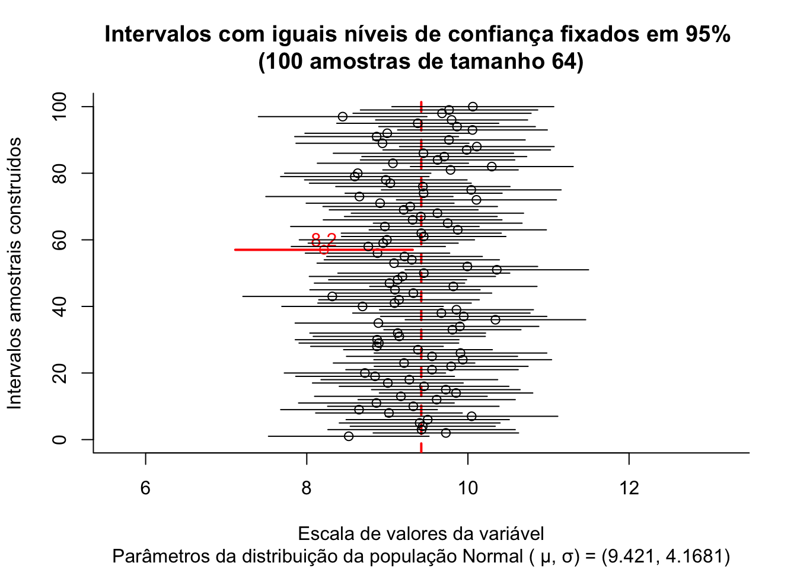

Capítulo 9 Introdução à distribuição das médias e diferenças entre médias e seus intervalos de confiança
A finalidade de uma amostra é obter uma estimativa do valor de um ou mais parãmetros de uma população.
Observa-se que os valores amostrais repetidamente extraídos de modo aleatório de uma mesma população variam de uma para outra amostra e também em relação ao verdadeiro parâmetro dessa população; todavia, demonstra-se que essa variabilidade pode ser descrita por meio de distribuições de probabilidade.
Distribuições de probabilidade quando usadas para esse propósito são denominadas de distribuições amostrais e permitem responder para cada amostra o quão próxima está a estatística amostral do verdadeiro parâmetro populacional. Essa resposta depende fundamentalmente de três fatores:
- a estatistica que está sendo utilizada: diferentes estatísticas requerem diferentes distribuições de probabilidade para modelar sua variabilidade;
- o tamanho da amostra que implica de modo inverso na variabilidade entre as amostras;
- a variabilidade existente na própria população sob estudo e amostragem.
9.1 Distribuições amostrais
Parâmetro é toda medida numérica descritiva de uma população. Quando essas medidas são calculadas sobre amostras extraídas de uma população passam a ser denominadas como estatísticas da população de origem. A média, a mediana, a variância, a proporção amostrais, assim como outras estatísticas amostrais, são exemplos de variáveis aleatórias (v.a.) uma vez que seus valores sofrem variação a cada amostra extraída.
Considere uma população com \(N\) elementos da qual se deseja extrair todas as possíveis amostras de tamanho \(n\). Para cada amostra extraída pode-se calcular uma mesma medida descritiva como, por exemplo, a média ( ou a variância, proporção ). O conjunto dos valores resultantes nos permite analisar como as estimativas amostrais se distribuem em comparação ao parâmetro que estão a estimar.
Essas distribuições são denominadas distribuições amostrais. O estudo das distribuições amostrais é um elemento fundamental na inferência estatística posto possibilitar o estabelecimento de intervalos de confiança relacionados ao valor de um parâmetro que se deseja inferir, a partir de uma estatística proveniente de uma única amostra.
O processo de extração de amostras pode ser com ou sem reposição. A extração com reposição assegura a independência entre os eventos e, eventos independentes são mais facilmente analisados.
O quantidade possível de amostras de tamanho \(n\) extraídas de uma população de tamanho \(N\) é dado por :
- com reposição: \(N^{n}\); e,
- sem reposição: \(C_{(N.n)}\)
Mais adiante veremos que processos de extração de amostras de tamanho \(n\), sem reposição de populações finitas com parâmetros \(\mu\) (média) e \(\sigma^{2}\) (variância) a esperança da v.a. de sua média amostral ainda é dada por:
\[ E(\stackrel{-}{X})=\mu \]
mas sua variância deve ser corrigida de:
\[ Var(\stackrel{-}{X}) =\frac{\sigma^{2}}{n} \]
para:
\[ Var(\stackrel{-}{X}) =\frac{\sigma^{2}}{n} \cdot (\frac{N-n}{N-1}) \]
em que \((\frac{N-n}{N-1})\) é denominado como fator de correção para populações finitas.
Para ilustrar o conceito de distribuição das médias amostrais considere uma situação onde uma empresa produz lâmpadas e a vida útil média, em horas, dessas lâmpadas segue uma distribuição Normal tal que \(VU \sim N (1600, 120)\).
Usando conceitos já explicados em uma unidade anterior podemos determinar o tamanho amostral em função de:
- um erro máximo: \(\varepsilon\)=20 horas;
- um nível de significância estabelecido: \(\alpha\)=0,05; e,
- e alguma informação sobre a medida da variabilidade da variável em estudo: \(\sigma\)=120 horas (no caso, o desvio padrão populacional).
Figure 9.1: Flutuação dos valores médios para diversas amostras extraídas de uma mesma população distribuição \(\sim N (\mu; \sigma)\)
## mu media erro li ls
## 1 1600 1595 -5.2053 1574 1616
## 2 1600 1590 -9.5738 1572 1609
## 3 1600 1595 -4.9998 1576 1614
## 4 1600 1596 -4.1098 1578 1614
## 5 1600 1597 -2.8960 1576 1618
## 6 1600 1607 6.7973 1589 1624
## 7 1600 1585 -15.3134 1566 1603
## 8 1600 1592 -8.2184 1572 1611
## 9 1600 1593 -7.4963 1573 1612
## 10 1600 1591 -9.0853 1570 1612
## 11 1600 1599 -0.8403 1579 1619
## 12 1600 1571 -28.8844 1550 1592
## 13 1600 1602 1.8198 1582 1622
## 14 1600 1600 -0.3803 1581 1618
## 15 1600 1620 19.6831 1600 1639
## 16 1600 1603 2.7713 1582 1624
## 17 1600 1590 -9.6725 1570 1611
## 18 1600 1603 2.5358 1582 1623
## 19 1600 1611 10.8076 1592 1630
## 20 1600 1594 -5.9240 1574 1614
## 21 1600 1583 -16.5340 1565 1602
## 22 1600 1607 7.3711 1587 1628
## 23 1600 1604 3.9194 1583 1625
## 24 1600 1603 2.5622 1581 1624
## 25 1600 1592 -8.0463 1574 1610
## 26 1600 1604 4.1407 1584 1625
## 27 1600 1599 -0.6396 1577 1622
## 28 1600 1607 6.5496 1587 1627
## 29 1600 1589 -11.4973 1569 1608
## 30 1600 1593 -7.1788 1573 1612
## 31 1600 1595 -4.9554 1574 1616
## 32 1600 1584 -15.8675 1563 1606
## 33 1600 1600 -0.3895 1579 1620
## 34 1600 1602 1.8235 1582 1622
## 35 1600 1607 6.5745 1586 1628
## 36 1600 1604 3.8069 1586 1621
## 37 1600 1620 20.3681 1601 1640
## 38 1600 1594 -5.6136 1577 1612
## 39 1600 1621 20.6049 1602 1640
## 40 1600 1591 -8.6094 1570 1612
## 41 1600 1587 -12.9153 1568 1606
## 42 1600 1590 -9.7244 1570 1610
## 43 1600 1583 -16.6825 1562 1604
## 44 1600 1607 6.9034 1584 1630
## 45 1600 1612 12.0936 1593 1631
## 46 1600 1589 -10.6858 1570 1609
## 47 1600 1587 -12.8295 1568 1606
## 48 1600 1596 -3.9338 1578 1615
## 49 1600 1610 9.8668 1590 1630
## 50 1600 1588 -12.1612 1569 1607
## 51 1600 1602 2.4644 1582 1623
## 52 1600 1604 4.1818 1584 1624
## 53 1600 1622 21.9855 1601 1643
## 54 1600 1591 -8.6844 1570 1613
## 55 1600 1601 1.4259 1582 1621
## 56 1600 1614 13.8008 1594 1634
## 57 1600 1581 -18.5912 1561 1602
## 58 1600 1596 -3.9168 1574 1618
## 59 1600 1604 4.4348 1583 1625
## 60 1600 1591 -8.6123 1573 1610
## 61 1600 1607 6.5935 1588 1625
## 62 1600 1611 10.8436 1590 1631
## 63 1600 1604 3.9795 1585 1623
## 64 1600 1592 -7.6408 1572 1613
## 65 1600 1614 14.1084 1595 1633
## 66 1600 1593 -7.1070 1572 1614
## 67 1600 1600 -0.4230 1581 1619
## 68 1600 1586 -14.1748 1568 1604
## 69 1600 1592 -8.1071 1573 1610
## 70 1600 1600 -0.4241 1579 1620
## 71 1600 1606 6.4760 1585 1628
## 72 1600 1601 1.1302 1582 1620
## 73 1600 1596 -3.5701 1577 1616
## 74 1600 1598 -2.3214 1577 1618
## 75 1600 1606 5.9525 1585 1627
## 76 1600 1595 -4.7276 1576 1615
## 77 1600 1601 1.2407 1582 1620
## 78 1600 1600 -0.3218 1580 1620
## 79 1600 1603 3.1614 1582 1624
## 80 1600 1603 3.1105 1584 1622
## 81 1600 1608 8.2260 1589 1628
## 82 1600 1589 -10.9880 1569 1609
## 83 1600 1625 24.8740 1606 1644
## 84 1600 1609 9.0987 1590 1628
## 85 1600 1606 5.6113 1586 1626
## 86 1600 1595 -4.6060 1575 1616
## 87 1600 1606 6.0659 1587 1625
## 88 1600 1573 -27.0370 1551 1595
## 89 1600 1592 -8.1918 1574 1610
## 90 1600 1608 8.0376 1588 1628
## 91 1600 1601 0.7167 1582 1620
## 92 1600 1603 2.7636 1582 1624
## 93 1600 1596 -4.1581 1578 1613
## 94 1600 1595 -5.1171 1576 1614
## 95 1600 1604 4.0447 1584 1624
## 96 1600 1595 -4.8449 1578 1613
## 97 1600 1594 -5.9348 1575 1613
## 98 1600 1590 -9.5860 1571 1610
## 99 1600 1615 14.6750 1596 1633
## 100 1600 1583 -16.8618 1563 1604
Observa-se no gráfico acima que algumas das amostras (em vermelho), numa proporção igual ao nível de significância estabelecido quando do dimensionamento (5%), geram médias (amostrais) se afastam do valor médio na população mais que o erro estabelecido (20 h).
9.2 Intervalos de confiança
Um intervalo de confiança (\(IC\)) pode ser entendido com a faixa de valores delimitada por um mínimo e um máximo, calculados como função direta de um nível de confiança e da variabilidade e inversa da tamanho amostral.
\[ \text{estimativa amostral} \pm confiança.\sqrt\frac{variabilidade}{n} \]
Raramente se dispõe de informação a respeito da variabilidade (\(\sigma^{2}\)) da população estudada. Assim, a variabilidade populacional será frequentemente incorporado na expressão acima, com ligeiras modificações, na forma de sua estimativa amostral (\(S^{2}\)).
De certo modo, um intervalo de confiança reflete uma estimativa objetiva da (im)precisão e do tamanho da amostra de determinada pesquisa e, assim, podemos considerá-lo como uma medida da qualidade da amostra e da pesquisa.
O nível de confiança é designado pela quantidade \((1-\alpha)\) na qual \(\alpha\) é denominado de nível de significância, uma medida da probabilidade de erro.
Dependendo do nível de confiança que escolhemos os limites superior e inferior do intervalo mudam para uma mesma estimativa amostral. Os intervalos de confiança mais utilizados na literatura são os de 90%, 95%, 99% e menos de 99,9%.
O intervalo de confiança de 95% é tradicionalmente o intervalo mais utilizado na literatura e isso está relacionado ao nível de significância estatística (\(P<0,05\)) geralmente mais aceito.
Quanto menor for a amplitude de um intervalo, maior será a precisão da estimativa. Todavia, somente estudos com amostras razoavelmente grandes resultarão em um intervalo de confiança estreito, indicando simultaneamentente com alta precisão e alto grau de confianla a estimativa do parâmetro.
Intervalos de confiança podem ser construídos a quase todas as quantidades estatísticas e suas diferenças (quando se procura estudar se há ou não diferenças entre os parâmetros de duas populaçoes) como, por exemplo:
- médias;
- proporções; e,
- variâncias.
Um intervalo de confiança estabelecido sob certa probabilidade não deve ser interpretado como sendo a faixa de valores, delimitada por um mínimo e máximo, entre os quais o parâmetro da população (o qual se estima ou sobre o qual se infere) se insere.
Mas sim que, extraíndo-se um grande número de amostras de igual tamanho e da mesma população, e construindo-se para cada uma dessas amostras um intervalo de confiança de um mesmo nível de significância (\(\alpha\)), observaremos que uma determinada proporção desses intervalos, chamada de nível de confiança (\(1-\alpha\)) irá, de fato, conter o parâmetro sobre o qual se estima ou sobre o qual se infere. Por conseguinte, uma proporção desses intervalos chamada de nível de significância (\(\alpha\)) não irá conter o verdadeiro valor do parâmetro populacional.
Assim, \((1-\alpha)\) traduz o grau de confiança que se tem que um intervalo de confiança, calculado sobre uma estatística advinda de uma particular amostra de tamanho \(n\) da variável aleatória \(X\), inclua o verdadeiro valor do parâmetro da população:
IC.N = function (N, n, mu, sigma, conf) {
dados=data.frame()
plot(0, 0,
type="n",
xlim=c(mu-0.4*mu,mu+0.4*mu),
ylim=c(0,N),
bty="l",
xlab="Escala de valores da variável",
ylab="Intervalos amostrais construídos",
main=paste0("Intervalos com iguais níveis de confiança fixados em ", 100*conf, "% \n(",N," amostras de tamanho ",n,")") ,
sub=paste0("Parâmetros da distribuição da população Normal ( \u03bc, \u03c3) = (",mu,", ", sigma,")"))
abline(v=mu, col='red', lwd=2, lty=2)
#axis(1, at = c(mu-1*mu, mu, mu+1*mu))
zc = qnorm(1-((1-conf)/2))
#sigma.xbarra = sigma/sqrt(n)
for (i in 1:N) {
x = rnorm(n, mu, sigma)
media = mean(x)
erro= media-mu
sd = sd(x)
li = media - zc * sd/(sqrt(n))
ls = media + zc * sd/(sqrt(n))
temp=cbind(mu, media, erro, li, ls)
dados=rbind(dados, temp)
plotx = c(li,ls)
ploty = c(i,i)
if (li > mu | ls < mu) lines(plotx,ploty, col="red", lwd=2, lend=0)
else lines(plotx,ploty, lend=0)
if (li > mu | ls < mu) points(media, i, col="red", cex=1)+text(y=i+3,x=media, labels=round(media,1), cex=1, col='red')
else points(media, i, col="black", cex=1)
}
colnames(dados)=c("mu", "media", "erro", "li", "ls")
return(dados)
}

## mu media erro li ls
## 1 9.421 9.269 -0.152096 8.150 10.388
## 2 9.421 9.413 -0.007726 8.305 10.522
## 3 9.421 9.924 0.502587 8.922 10.925
## 4 9.421 8.830 -0.590643 7.937 9.724
## 5 9.421 9.081 -0.339974 8.046 10.116
## 6 9.421 9.519 0.097587 8.520 10.518
## 7 9.421 9.310 -0.111075 8.181 10.439
## 8 9.421 9.124 -0.297419 8.007 10.240
## 9 9.421 8.953 -0.468454 7.975 9.930
## 10 9.421 8.254 -1.166979 7.234 9.274
## 11 9.421 8.959 -0.462295 8.076 9.841
## 12 9.421 9.807 0.385712 8.758 10.855
## 13 9.421 9.487 0.066328 8.536 10.439
## 14 9.421 9.627 0.205714 8.695 10.559
## 15 9.421 10.196 0.774583 9.311 11.080
## 16 9.421 10.230 0.809305 9.039 11.422
## 17 9.421 9.624 0.203225 8.654 10.594
## 18 9.421 8.523 -0.897873 7.527 9.519
## 19 9.421 10.162 0.740922 8.997 11.327
## 20 9.421 9.837 0.415577 8.899 10.774
## 21 9.421 9.537 0.116190 8.422 10.653
## 22 9.421 9.773 0.352191 8.831 10.715
## 23 9.421 9.932 0.510997 8.902 10.962
## 24 9.421 9.990 0.569019 8.975 11.005
## 25 9.421 9.756 0.335238 8.657 10.855
## 26 9.421 9.272 -0.148529 8.214 10.331
## 27 9.421 8.746 -0.675481 7.583 9.908
## 28 9.421 8.923 -0.497673 7.961 9.886
## 29 9.421 9.299 -0.122344 8.307 10.290
## 30 9.421 9.470 0.048923 8.521 10.419
## 31 9.421 9.389 -0.032317 8.358 10.420
## 32 9.421 9.252 -0.169247 8.142 10.361
## 33 9.421 9.029 -0.391813 8.137 9.922
## 34 9.421 9.872 0.451298 8.800 10.945
## 35 9.421 9.604 0.183174 8.627 10.581
## 36 9.421 10.071 0.649507 9.027 11.114
## 37 9.421 10.465 1.044065 9.506 11.424
## 38 9.421 9.211 -0.209929 8.268 10.154
## 39 9.421 9.257 -0.164006 8.396 10.118
## 40 9.421 10.161 0.740212 9.169 11.153
## 41 9.421 10.127 0.706473 9.135 11.120
## 42 9.421 8.977 -0.443671 7.948 10.006
## 43 9.421 10.444 1.022828 9.375 11.512
## 44 9.421 9.148 -0.272808 8.098 10.198
## 45 9.421 9.274 -0.147235 8.299 10.248
## 46 9.421 9.342 -0.079310 8.383 10.301
## 47 9.421 9.679 0.258331 8.678 10.680
## 48 9.421 9.760 0.339251 8.507 11.014
## 49 9.421 9.402 -0.019242 8.421 10.382
## 50 9.421 9.813 0.392419 8.729 10.898
## 51 9.421 8.784 -0.637406 7.748 9.819
## 52 9.421 9.740 0.319448 8.723 10.757
## 53 9.421 9.762 0.340822 8.626 10.898
## 54 9.421 8.452 -0.969226 7.432 9.472
## 55 9.421 9.817 0.396143 8.815 10.820
## 56 9.421 9.314 -0.107134 8.174 10.454
## 57 9.421 8.959 -0.462027 7.984 9.934
## 58 9.421 9.002 -0.419058 8.108 9.896
## 59 9.421 9.274 -0.146666 8.257 10.292
## 60 9.421 9.641 0.220113 8.494 10.788
## 61 9.421 9.025 -0.396192 8.114 9.936
## 62 9.421 9.479 0.057505 8.573 10.384
## 63 9.421 9.516 0.094858 8.683 10.349
## 64 9.421 9.905 0.483545 8.763 11.046
## 65 9.421 9.241 -0.179953 8.402 10.080
## 66 9.421 9.341 -0.080417 8.250 10.431
## 67 9.421 8.805 -0.616450 7.713 9.897
## 68 9.421 9.637 0.216272 8.563 10.712
## 69 9.421 9.510 0.088569 8.410 10.609
## 70 9.421 9.431 0.009606 8.382 10.479
## 71 9.421 9.278 -0.142808 8.338 10.219
## 72 9.421 9.008 -0.412656 8.025 9.992
## 73 9.421 9.429 0.007657 8.553 10.305
## 74 9.421 9.659 0.238358 8.794 10.525
## 75 9.421 8.926 -0.494998 7.755 10.097
## 76 9.421 9.423 0.002170 8.282 10.565
## 77 9.421 9.571 0.150292 8.572 10.571
## 78 9.421 9.292 -0.129168 8.141 10.442
## 79 9.421 9.751 0.330143 8.597 10.905
## 80 9.421 9.515 0.094480 8.422 10.609
## 81 9.421 9.579 0.157771 8.466 10.692
## 82 9.421 9.632 0.211227 8.804 10.460
## 83 9.421 8.475 -0.945819 7.585 9.365
## 84 9.421 10.098 0.676677 9.195 11.000
## 85 9.421 8.932 -0.488615 8.057 9.808
## 86 9.421 9.230 -0.190584 8.148 10.313
## 87 9.421 9.760 0.338883 8.848 10.672
## 88 9.421 9.275 -0.145873 8.170 10.380
## 89 9.421 8.556 -0.865198 7.470 9.642
## 90 9.421 9.296 -0.125102 8.291 10.301
## 91 9.421 10.588 1.166960 9.583 11.593
## 92 9.421 9.899 0.478327 8.765 11.034
## 93 9.421 9.891 0.469832 8.918 10.863
## 94 9.421 9.530 0.108510 8.569 10.490
## 95 9.421 9.121 -0.300396 8.254 9.987
## 96 9.421 8.745 -0.675818 7.575 9.915
## 97 9.421 9.215 -0.206098 8.100 10.330
## 98 9.421 8.938 -0.482716 7.906 9.970
## 99 9.421 9.451 0.029938 8.346 10.556
## 100 9.421 9.868 0.446946 9.071 10.665
O gráfico acima expõe os intervalos de confiança: \((1-\alpha)\)=95% produzidos para as 100 médias de amostras de tamanho 64 extraídas de uma população com parâmetros \(\mu:\) 9.421 e \(\sigma:\) 4.1681.
A proporção de intervalos amostrais que não contém o verdadeiro valor do parâmetro populacional pode ser visualmente inspecionada pelas linhas em vermelho.
Intervalos de confiança bilaterais: intervalos delimitados por dois valores: mínimo e máximo, para a proporção amostral, dentro do qual todos os valores possuem um mesmo nível de confiança de ocorrência.
Intervalos de confiança unilaterais: intervalos delimitados apenas em um de seus lados, nos quais todos os valores possuem um mesmo nível de confiança. Podem ser limitados à direita por um valor máximo ou limitados à esquerda por um valor mínimo.
9.3 Distribuição das médias amostrais e seus intervalos de confiança

Figure 9.2: Ilustração esquemática de \(n\) amostras extraídas de uma mesma população de parâmetros \(\mu\) e \(\sigma\), cada uma apresentando as respectivas estatísticas calculadas
Para estudarmos a distribuição das médias amostrais considerem uma população com parâmetros \(\mu\) (média) e \(\sigma^{2}\) (variância).
A distribuição das médias amostrais expressa como se distribuem os valores dessa estatística calculada para todas as possíveis amostras de tamanho n extraídas de uma população cujo valor desse parãmetro é desconhecido.
A convergência da forma de distribuição e dos parâmetros da distribuição das médias amostrais são elucidadas pelas Leis (fraca e forte) dos Grandes Números e pelo Teorema Central do Limite (George Pólya, 1920).
De acordo com a teoria, pelo uso de simulações computacionais consegue-se ilustrar que para uma amostra de tamanho n (onde \(x_{1},x_{1},...,x_{n}\) são os valores assumidos das variáveis aleatórias \(X_{1},X_{1},...,X_{n}\)) em amostras extraídas de uma população infinita de tamanho N com média \(\mu\) e variância \(\sigma^{2}\)) a distribuição das médias amostrais (v.a. \(\stackrel{-}{X}\)) segue uma distribuição com os média \(=\mu\) e variância \(=\frac{\sigma^{2}}{n}\) pois:
\[\begin{align*} E(\stackrel{-}{X}) & = \frac{1}{n} \cdot \{E(X_{1})+E(X_{2})+...+E(X_{n})\} \\ & = (\frac{1}{n})\cdot\{\mu+\mu+...+\mu\} = \frac{n\cdot\mu}{n} = \mu \end{align*}\]
\[\begin{align*} Var(\stackrel{-}{X}) & = \frac{1}{n^{2}} \cdot \{Var(X_{1})+Var(X_{2}+...+Var(X_{n})\} \\ & = (\frac{1}{n^{2}}) \cdot \{\sigma^{2}+\sigma^{2}+...+\sigma^{2}\} = n \cdot \frac{\sigma^{2}}{n^{2}} = \frac{\sigma^{2}}{n} \end{align*}\]
Equivale afirmar que, independentemente da forma de distribuição da população de origem da qual são extraídas as amostras, a distribuição dos valores da variável aleatória \(\stackrel{-}{X}\) tenderá a seguir uma distribuição \(\sim N(\mu;\frac{\sigma^{2}}{n}\)) à medida que n , o tamanho da amostra aumenta, como ilustrado nas Figuras 9.3 e 9.5.
O TCL garante a aproximação da distribuição de \(\stackrel{-}{X}\) a uma distribuição Normal com média \(\mu\) e variância \(\frac{\sigma^{2}}{n}\) quando \(n\) é grande, independentemente da distribuição da população de origem. Na prática, essa aproximação é usada quando \(n\ge 30\).
Portanto, para populações infinitas ou amostragem com reposição:
\[ \stackrel{-}{X} \sim N(\mu, \frac{\sigma^{2}}{n}) \]
Demostração usando amostras extraídas de uma população com distribuição \(\sim U (v_{min}; v_{max})\)
# Definindo os parãmetros e a amostra
min_1=2
max_1=6
NN=5000
pop_1=runif(NN, min=min_1, max=max_1)
df=as.data.frame(pop_1)
# A distribuição da população ilustrada em um histograma
ggplot(df, aes(x=pop_1)) +
geom_histogram( binwidth=1,color="black", fill="lightblue")+
scale_y_continuous(name="Frequência") +
scale_x_continuous(name="Valores")+
labs(title= paste("Histograma de uma população com Distribuição Uniforme"),
subtitle = paste("Parâmetros: valor min =",min_1,"; valor max =", max_1))+
theme(plot.title = element_text(size = 10, face = "bold"),
axis.text.x = element_text(angle=0, hjust=1, size=10),
axis.text.y = element_text(angle=0, hjust=1, size=10),
axis.title.x = element_text(size = 10),
axis.title.y = element_text(size = 10))Figure 9.3: Histograma de uma população cuja característica de interesse segue uma Distribuição Uniforme
A Figura 9.3 mostra o histograma de uma amostra de 5000 elementos de uma população com Distribuição Uniforme de parâmetros \(v_{min}:\) 2 e \(v_{max}:\) 6.

Figure 9.4: Intervalos de confiança construídos para diversas estimativas amostrais de uma população com Distribuição \(\sim N (\mu= \frac{max-min}{2}; \sigma^2=\frac{1}{12}(max-min)^2)\)
A Figura 9.4 expõe os intervalos sob nível de confiança de \((1-\alpha)\)=95% produzidos para as 100 médias de amostras de tamanho 30 extraídas de uma população Uniforme com parâmetros \(v_{max}:\) 6 e \(v_{min}:\) 2 e, conforme assegura o TCL, o valor médio das médias amostrais (linha tracejada preta) converge assintoticamente para a média da população de origem (linha tracejada em vermelho) com o incremento do tamanho das amostras.
meu_titulo1=paste("Distribuição das médias de", N, "amostras de tamanho n=",n,"\n população de origem sob Dist. Unif. (min: ", min_1, "; max: ", max_1, ")")
meu_titulo2=paste("As médias amostrais ~ N( x=",round(mean(m),2),";sd=",round(sd(m),2),")")
dados=as.data.frame(m)
ggplot(dados, aes(m)) +
geom_histogram(aes(y = stat(density)), bins=10, fill="lightblue", col="black") +
geom_area(stat = "function",
fun = dnorm,
args = list(mean=mean(m), sd=sd(m)),
fill = NA,
colour="red") +
scale_y_continuous(name="Densidade") +
scale_x_continuous(name="Valores das médias amostrais") +
labs(title=meu_titulo1)+
geom_segment(aes(x = mean(m), y = 0, xend = mean(m), yend = max(dnorm(m))), color="blue", lty=2, lwd=0.3)+
annotate(geom="text", x=mean(m), y=max(dnorm(m)),
label=meu_titulo2, angle=0, vjust=-0.5, hjust=0.5, color="blue",size=6)+
theme(plot.title = element_text(size = 10, face = "bold"),
axis.text.x = element_text(angle=0, hjust=1, size=10),
axis.text.y = element_text(angle=0, hjust=1, size=10),
axis.title.x = element_text(size = 10),
axis.title.y = element_text(size = 10))
Figure 9.5: Histograma da distribuição das médias de amostras extraidas de uma população com Distribuição Uniforme mostra que as mesmas seguem uma Distribuição \(\sim N (\mu= \frac{max-min}{2};\sigma^2=\frac{1}{12}(max-min)^2)\)
O histograma da Figura 9.5 ilustra que os valores das médias calculadas de 30 amostras extraídas de uma população com distribuição Uniforme \(\sim U (v_{min}, v_{max}\)) seguem uma distribuição Normal \(\sim N (\mu= \frac{v_{max}-v_{min}}{2}; \sigma^2=\frac{1}{12}(v_{max}-v_{min})^2)\).
Demostração usando amostras extraídas de uma população com distribuição \(\sim N (\mu;\sigma)\)
# Definindo os parãmetros e a amostra
media=80
desvio=4
NN=5000
pop_2=rnorm(n=NN, mean = media, sd = desvio)
df=as.data.frame(pop_2)
# A distribuição da população ilustrada em um histograma
ggplot(df, aes(x=pop_2)) +
geom_histogram( binwidth=1,color="black", fill="lightblue")+
scale_y_continuous(name="Frequêcia") +
scale_x_continuous(name="Valores")+
labs(title= paste("Histograma de uma população com Distribuição Normal"),
subtitle = paste("Parâmetros: média =",media,"; desv. padrão =", desvio))+
theme(plot.title = element_text(size = 10, face = "bold"),
axis.text.x = element_text(angle=0, hjust=1, size=10),
axis.text.y = element_text(angle=0, hjust=1, size=10),
axis.title.x = element_text(size = 10),
axis.title.y = element_text(size = 10))
Figure 9.6: Histograma de uma população cuja característica de interesse segue uma Distribuição Normal
A Figura 9.6 mostra o histograma de uma amostra de 5000 elementos de uma população com Distribuição Normal de parâmetros média= 80 e desvio padrão =4.
Figure 9.7: Intervalos de confiança construídos para diversas estimativas amostrais de uma população com Distribuição \(\sim N (\mu; \sigma)\)
A Figura 9.7 expõe os intervalos sob nível de confiança de \((1-\alpha)\)=95% produzidos para as 100 médias de amostras de tamanho 5000 extraídas de uma população Uniforme com parâmetros \(v_{max}:\) 6 e \(v_{min}:\) 2 e, conforme assegura o TCL, o valor médio das médias amostrais (linha tracejada preta) converge assintoticamente para a média da população de origem (linha tracejada em vermelho) com o incremento do tamanho das amostras.
meu_titulo1=paste("Distribuição das médias de", N, "amostras de tamanho n=",n,"\n população de origem sob Dist. Normal ( \u03bc: ", media, ", \u03c3: ", desvio, ")")
meu_titulo2=paste("As médias amostrais ~ N( x\u0304=",round(mean(m),2),";sd=",round(sd(m),2),")")
dados=as.data.frame(m)
ggplot(dados, aes(m)) +
geom_histogram(aes(y = stat(density)), bins=10, fill="lightblue", col="black") +
geom_area(stat = "function",
fun = dnorm,
args = list(mean=mean(m), sd=sd(m)),
fill = NA,
colour="red") +
scale_y_continuous(name="Densidade") +
scale_x_continuous(name="Valores das médias amostrais") +
labs(title=meu_titulo1)+
geom_segment(aes(x = mean(m), y = 0, xend = mean(m), yend = max(dnorm(m))), color="blue", lty=2, lwd=0.3)+
annotate(geom="text", x=mean(m), y=max(dnorm(m)),
label=meu_titulo2, angle=0, vjust=-0.5, hjust=0.5, color="blue",size=6)+
theme(plot.title = element_text(size = 10, face = "bold"),
axis.text.x = element_text(angle=0, hjust=1, size=10),
axis.text.y = element_text(angle=0, hjust=1, size=10),
axis.title.x = element_text(size = 10),
axis.title.y = element_text(size = 10))
Figure 9.8: Histograma da distribuição das médias de amostras extraidas de uma população Normal mostra que as mesmas seguem uma Distribuição \(\sim N (\stackrel{-}{x}= \mu; s=\frac{\sigma}{\sqrt{n}})\)
O histograma da Figura 9.8 ilustra que os valores das médias calculadas de 5000 amostras extraídas de uma população com distribuição Normal \(\sim N (\mu, \sigma)\) seguem uma distribuição Normal \(\sim N (\mu= \mu; \sigma=\frac{\sigma}{\sqrt{n}})\).
Sendo o erro amostral expresso como: \(\varepsilon=\stackrel{-}{X} - \mu\), o histograma abaixo ilustra que os valores dos erros calculados de 5000 amostras extraídas de uma população com distribuição Normal \(\sim N (\mu, \sigma)\) seguem uma distribuição Normal \(\sim N (\mu= \mu; \sigma=\frac{\sigma}{\sqrt{n}})\).

Figure 9.9: Histograma da distribuição dos erros de amostras de tamanho n, extraidas de uma população com distribuição \(\sim N(\mu; \sigma)\) mostra que os mesmos seguem uma distribuição \(\sim N (0; s=\frac{\sigma}{\sqrt{n}})\)
erro_min=min(matriz$erro)
erro_max=max(matriz$erro)
meu_titulo1=paste("Distribuição dos erros de", N, "amostras de tamanho n=",n,"\n extraídas de uma população Normal ( \u03bc: ", mu, ", \u03c3: ", sigma, ")")
meu_titulo2=paste("Os erros amostrais ~ N( x\u0304=",round(mean(matriz$erro),2),"~0 ; sd=",round(sd(matriz$erro),2)," ~\u03c3/sqrt(n))")
ggplot(matriz, aes(x=erro)) +
geom_histogram(aes(y = stat(density)), bins=round(sqrt(N),0), fill="lightblue", col="black") +
geom_area(stat = "function",
fun = dnorm,
args = list(mean=mean(matriz$erro), sd=sd(matriz$erro)),
fill = NA,
colour="red") +
scale_y_continuous(name="Frequência") +
scale_x_continuous(name="Valores dos erros amostrais", limits=c(-2,2) )+
labs(title=meu_titulo1)+
annotate(geom="text",
label=meu_titulo2, x=-0.7,y= 0.9,
angle=0, vjust=-0.5, hjust=0.5,
color="blue",size=4)+
theme(plot.title = element_text(size = 10, face = "bold"),
axis.text.x = element_text(angle=0, hjust=1, size=10),
axis.text.y = element_text(angle=0, hjust=1, size=10),
axis.title.x = element_text(size = 10),
axis.title.y = element_text(size = 10))
Figure 9.10: Histograma da distribuição dos erros de amostras de tamanho n, extraidas de uma população com distribuição \(\sim N(\mu; \sigma)\) mostra que os mesmos seguem uma distribuição \(\sim N (0; s=\frac{\sigma}{\sqrt{n}})\)
Corolário: se \((X_{1}, X_{2},...,X{n})\) for uma amostra aleatória simples da população \(X\) de média \(\mu\) e variância \(\sigma^{2}\) conhecida, e \(\stackrel{-}{X}= \frac{(X_{1}+X_{2}+...+X{n})}{n}\), tal que \(n\ge 30\), então a estatística \(Z\) pode ser definida, bem como sua correspondente distribuição:
\[ Z = \frac{\stackrel{-}{X} - \mu}{\frac{\sigma}{\sqrt{n}}} \sim N(0 ,1) \]
Uma vez que a estatística \(Z \sim N(0 ,1)\) (ela ``decorre’’ da padronização da variável aleatória \(\stackrel{-}{X}\)) as probabilidades para os intervalos desejados de valores \(Z\) podem ser facilmente encontrados em tabelas, como mais adiante se verá na constução de intervalos de confiança.
9.3.1 Fator de correção para populações finitas
Se amostras de tamanho \(n\) sem reposição são extraídas de uma população finita de tamanho N aplica-se o fator de correção para populações finitas (\(\sqrt{\frac{(N-n)}{(N-1)}}\)) junto ao desvio padrão das expressões do erro máximo \(\varepsilon\) anteriormente expostas:
\[\begin{align*} \varepsilon & =(\stackrel{-}{x}-\mu)={z}_{(1-\frac{\alpha }{2})} \cdot \frac{\sigma}{\sqrt{n}} \cdot \sqrt{\frac{(N-n)}{(N-1)}} \\ & =(\stackrel{-}{x}-\mu)={z}_{(1-\frac{\alpha }{2})} \cdot \frac{S}{\sqrt{n}} \cdot \sqrt{\frac{(N-n)}{(N-1)}}\\ & =(\stackrel{-}{x}-\mu)= ({t}_{(1-\frac{\alpha }{2}, (n-1))} \cdot \frac{S}{\sqrt{n}} \cdot \sqrt{\frac{(N-n)}{(N-1)}})\\ \end{align*}\]
Portanto, para populações finitas com amostragem sem reposição (com \(n<N\)):
\[ \stackrel{-}{X} \sim N(\mu, \frac{\sigma^{2}}{n} \cdot \frac{(N-n)}{(N-1)} ) \]
9.3.2 Intervalo de confiança para a média de uma população Normal
Se, por alguma razão, a variância populacional (\(\sigma^{2}\)) é conhecida, podemos utilizar \(\stackrel{-}{X}\) como estimador pontual da média.
Assim, \(X\) seguirá uma distribuição Normal tal que:
\[ \stackrel{-}{X} \sim N(\mu, \frac{\sigma^{2}}{n}) \]
Segue também que a estatística \(Z\), como antes definida, seguirá uma distribuição Normal tal que:
\[ Z = \frac{\stackrel{-}{X} - \mu}{\frac{\sigma}{\sqrt{n}}} \sim N(0 ,1) \] com:
- \(\stackrel{-}{X}\) é uma média amostral;
- \(\mu\) é a média populacional;
- \(\sigma\) é o desvio padrão populacional; e,
- \(n\) é o tamanho da amostra extraída.
Entretanto, a situação mais usual é aquela na qual não termos informação alguma sobre a variância populacional (\(\sigma^{2}\)).
Nessas situações, se o tamanho da amostra é grande (na prática \(n\ge 30\)), podemos substituir \(\sigma\) na estatística \(Z\) por \(S\): substituir o desvio padrão populacional pelo desvio padrão da amostra extraída, sem que o erro cometido com esta substituição seja grande.
Com tal substituição, a estatística \(Z\) e passa a ser tal que:
\[ Z = \frac{\stackrel{-}{X} - \mu}{\frac{S}{\sqrt{n}}} \sim N(0 , 1) \]
em que:
- \(\stackrel{-}{X}\) é uma média amostral;
- \(\mu\) é a média populacional;
- \(S\) é o desvio padrão da amostra; e,
- \(n\) é o tamanho da amostra.
Caso a variância populacional (\(\sigma^{2}\)) não seja conhecida e o tamanho da amostra não possa ser admitido como grande (\(n<30\)) e sendo o estimador da variância amostral assim definido:
\[ {S}^{2}=\frac{1}{\left(n-1\right)}\sum _{i=1}^{n}{\left({X}_{i}-\stackrel{-}{{X}_{1}}\right)}^{2} \]
Definindo-se a variável \(Y = \frac{(n-1)\cdot s^{2}}{\sigma^{2}}\) tem uma distribuição \(\chi^{2}\) com (n-1) graus de liberdade tal que:
\[ Y = \frac{(n-1)\cdot s^{2}}{\sigma^{2}} \sim \chi^{2}_{(n-1)}, \]
e considerando-se que \(Z\) é tal que:
\[ Z = \frac{\stackrel{-}{X} - \mu}{\frac{\sigma}{\sqrt{n}}} \sim N(0 ,1) \]
segue a estatística \(T\) e sua correspondente distribuição, denominada por t de Student :
\[
T=\frac{Z}{\sqrt{\frac{Y}{\left(n-1\right)}}} \sim {t}_{\left(n-1\right)}.
\]
Para essa situação na qual a variância populacional não é conhecida e o tamanho amostral é pequeno, com alguma manipulação chega-se à estatística \(T\) e sua correspondente distribuição:
\[ T = \frac{(\stackrel{-}{X} - \mu)}{ \frac{S}{\sqrt{n}} } \sim t_{(n-1)} \]
em que:
- \(\stackrel{-}{X}\) é uma média amostral;
- \(\mu\) é a média populacional;
- \(S\) é o desvio padrão da amostra; e,
- \(n\) é o tamanho da amostra; e,
- \((n-1)\) é uma quantidade denominada como graus de liberdade.
As probabilidades associadas a um intervalo para um determinado valor da estatística ``t’’ da distribuição de Student encontram-se tabeladas para variados graus de liberdade , como mais adiante se verá na constução de intervalos de confiança.
9.3.3 Intervalos de confiança para a média de uma população Normal com variância conhecida (Figura 6.9)
\[ Z = \frac{\stackrel{-}{X} - \mu}{\frac{\sigma}{\sqrt{n}}} \sim N(0 ,1) \]
em que:
- \(\stackrel{-}{X}\) é uma média amostral;
- \(\mu\) é a média populacional;
- \(\sigma\) é o desvio padrão populacional;
- \(n\) é o tamanho da amostra; e,
- \(Z\) é a estatística a ser calculada para a construção do intervalo de confiança sob o nível de significância \(\alpha\) estabelecido.
alfa=0.05
prob_desejada1=alfa/2
z_desejado1=round(qnorm(prob_desejada1),4)
d_desejada1=dnorm(z_desejado1, 0, 1)
prob_desejada2=1-alfa/2
z_desejado2=round(qnorm(prob_desejada2),4)
d_desejada2=dnorm(z_desejado2, 0, 1)
ggplot(NULL, aes(c(-4,4))) +
geom_area(stat = "function",
fun = dnorm,
fill = "red",
xlim = c(-4, z_desejado1),
colour="black") +
geom_area(stat = "function",
fun = dnorm,
fill = "lightgrey",
xlim = c(z_desejado1,0),
colour="black") +
geom_area(stat = "function",
fun = dnorm,
fill = "lightgrey",
xlim = c(0, z_desejado2),
colour="black") +
geom_area(stat = "function",
fun = dnorm,
fill = "red",
xlim = c(z_desejado2,4),
colour="black") +
scale_y_continuous(name="Densidade") +
scale_x_continuous(name="Valores ``z'' da distribuição Normal padrão") +
labs(title=
"Curva da função densidade \nDistribuição Normal Padrão",
subtitle = "P(-z, z)=(1-\u03b1) em cinza (nível de confiança) \nP(-\U221e; -z)= P(z; \U221e)= \u03b1/2 em vermelho ")+
geom_segment(aes(x = z_desejado1, y = 0, xend = z_desejado1, yend = d_desejada1), color="blue", lty=2, lwd=0.3)+
geom_segment(aes(x = z_desejado2, y = 0, xend = z_desejado2, yend = d_desejada2), color="blue", lty=2, lwd=0.3)+
annotate(geom="text", x=z_desejado1-0.1, y=d_desejada1, label="-z", angle=90, vjust=0, hjust=0, color="blue",size=6)+
annotate(geom="text", x=z_desejado2+0.3, y=d_desejada2, label="z", angle=90, vjust=0, hjust=0, color="blue",size=6)+
annotate(geom="text", x=z_desejado1-1.8, y=0.1, label="Intervalo aberto à esq. \n(probabilidade=\u03b1/2)", angle=0, vjust=0, hjust=0, color="blue",size=3)+
annotate(geom="text", x=z_desejado2+0.5, y=0.1, label="Intervalo aberto à dir. \n(probabilidade=\u03b1/2)", angle=0, vjust=0, hjust=0, color="blue",size=3)+
annotate(geom="text", x=z_desejado1+1.3, y=0.2, label="Intervalo fechado \n(probabilidade= (1-\u03b1))", angle=0, vjust=0, hjust=0, color="blue",size=3)+
theme_bw()
Figure 9.11: Regiões críticas, aquém e além das quais, a probabilidade associada aos valores \(Z\) é inferior a \(\frac{\alpha}{2}\), estabelecendo assim um intervalo com nível de confiança igual a \((1-\alpha)\)
Na Figura 9.11 observa-se:
- o nível de significância \(\alpha\);
- o nível de confiança \((1-\alpha)\); e,
- o valor tabelado da estatística \(Z\) para o nível de confiança fixado.
Assim,
\[\begin{align*} P\left[-{Z}_{(1-\frac{\alpha }{2})}\le Z \le {Z }_{(1-\frac{\alpha }{2})}\right] & = (1-\alpha) \\ P\left[-{z}_{(1-\frac{\alpha }{2})}\le \frac{\stackrel{-}{x}-\mu }{\frac{\sigma}{\sqrt{n}}} \le {z}_{(1-\frac{\alpha }{2})}\right] & = (1-\alpha) \\ P[\stackrel{-}{x}-({z}_{(1-\frac{\alpha }{2})} \cdot \frac{\sigma}{\sqrt{n}}) \le \mu \le \stackrel{-}{x}+({z}_{(1-\frac{\alpha }{2})} \cdot \frac{\sigma}{\sqrt{n}}) ] & = (1-\alpha) \end{align*}\]
\[ IC(\mu)_{(1-\alpha)} = [\stackrel{-}{x} \pm {z}_{c} \cdot \frac{\sigma}{\sqrt{n}}] \]
Assim, se \(\stackrel{-}{x}\) é usado como estimativa de \(\mu\), podemos afirmar estar \(100.(1-\alpha)\)% confiantes de que o erro não excederá \(({z}_{(1-\frac{\alpha }{2})} \cdot \frac{\sigma}{\sqrt{n}})\).
A quantidade \(\varepsilon=(\stackrel{-}{x}-\mu)={z}_{(1-\frac{\alpha }{2})} \cdot \frac{\sigma}{\sqrt{n}}\) é chamada de Erro máximo da estimativa ao se arbitrar um nível de confiança \(\alpha\) para um determinado tamanho amostral.
Exemplo: As vendas de 15 lojas de uma região do país apresentam uma média igual a US$ 20.000,00. Sabendo-se que as vendas de todas as lojas da região é uma variável aleatória que segue uma distribuição Normal, com desvio padrão igual a US$ 8.300,00, construa o intervalo de confiança para a média ao nível de confiança de 95%.
Dados do problema:
- o tamanho da amostra: \(n=15\);
- a média amostral: \(\stackrel{-}{x}\) = US$ 20.000;
- o desvio padrão populacional: \(\sigma\)= US$ 8.300;
- nível de confiança: \((1-\alpha) = 0,95\); e,
- valor extraído da tabela \(z=1,96\) correspondente ao nível de confiança estipulado \((1-\alpha)=95\%\).
\[\begin{align*} P[\stackrel{-}{x}-({z}_{(1-\frac{\alpha }{2})} \cdot \frac{\sigma}{\sqrt{n}}) \le \mu \le \stackrel{-}{x}+({z}_{(1-\frac{\alpha }{2})} \cdot \frac{\sigma}{\sqrt{n}}) ] & = (1-\alpha) \\ P[20.000 - (1,96 \cdot \frac{8.300}{\sqrt{15}}) \le \mu \le 20000 + ( 1,96 \cdot \frac{8.300}{\sqrt{15}}) ] & = 0,95 \\ P[20.000 - 4.200,38 \le \mu \le 20.000 + 4.200,38 ] & = 0,95 \\ \end{align*}\]
\[ IC_{(1-\alpha=0,95)} = [US\$ 15.799,62; US\$ 24.200,38] \]
Se quisermos ser rigorosos na interpretação do intervalo de confiança calculado podemos explicar que, se extrairmos um grande número de amostras de tamanho 15 dessa população, e para todas elas calcularmos intervalos de confiança como o acima definido, a proporção desses intervalos onde poderemos encontrar a média populacional de vendas será de 0,95 (95 intervalos em 100).
De uma forma mais sintética, podemos afirmar que o intervalo aleatório ]US$ 15.799,62; US$ 24.200,38[, é um intervalo de confiança a 95% para a média de vendas.
De forma mais corrente, embora menos correta em termos teóricos, é usual afirmar que, com 95% de confiança a média de vendas se situa entre os valores US$ 15.799,62 e US$ 24.200,38.
Intervalos de confiança unilaterais para uma média amostral sob variância populacional conhecida.
A Figura 6.10 ilustra um intervalo de confiança unilateral limitado à direita por um valor máximo, dde tal sorte que a probabilidade associada ao intervalo de valores da estatística \(Z\) inferiores a esse limitante é
\[ P\left [\mu \le \bar{x} + {z}_{c} \cdot \frac{\sigma}{\sqrt{n}} \right ] = (1- \alpha) \]
prob_desejada=0.95
z_desejado=round(qnorm(prob_desejada),4)
d_desejada=dnorm(z_desejado, 0, 1)
ggplot(NULL, aes(c(-4,4))) +
geom_area(stat = "function",
fun = dnorm,
fill = "lightgrey",
xlim = c(-4, 0),
colour="black") +
scale_y_continuous(name="Densidade") +
scale_x_continuous(name="Valores ``z'' da distribuição Normal padrão") +
geom_area(stat = "function",
fun = dnorm,
fill = "lightgrey",
xlim = c(0, z_desejado),
colour="black")+
geom_area(stat = "function",
fun = dnorm,
fill = "red",
xlim = c( z_desejado, 4),
colour="black")+
labs(title=
"Curva da função densidade
\nDistribuição Normal Padrão",
subtitle = "P(-\U221e; z)=(1-\u03b1) em cinza (nível de confiança) \nP(z, + \U221e)= \u03b1, em vermelho ")+
annotate(geom="text", x=z_desejado1+3.5, y=d_desejada1, label="z", angle=90, vjust=0, hjust=0, color="blue",size=6)+
annotate(geom="text", x=z_desejado1+4.5, y=0.1, label="Intervalo aberto à dir. \n(probabilidade=\u03b1)", angle=0, vjust=0, hjust=0, color="blue",size=3)+
annotate(geom="text", x=z_desejado1+1.3, y=0.2, label="Intervalo aberto à esq. \n(probabilidade= (1-\u03b1))", angle=0, vjust=0, hjust=0, color="blue",size=3)+
theme_bw()Figure 9.12: Região crítica, além da qual, a probabilidade associada aos valores \(Z\) é inferior a \(\alpha\), delimitando assim, à esquerda, um intervalo aberto com nível de confiança igual a \((1-\alpha)\)
A Figura 9.13 ilustra um intervalo de confiança unilateral limitado à esquerda por um valor mínimo, de tal sorte que a probabilidade associada ao intervalo de valores da estatística \(Z\) superiores a esse limitante é
\[ P\left [\mu \ge \bar{x} - {z}_{c} \cdot \frac{\sigma}{\sqrt{n}} \right ] = (1- \alpha) \]
prob_desejada=0.05
z_desejado=round(qnorm(prob_desejada),4)
d_desejada=dnorm(z_desejado, 0, 1)
ggplot(NULL, aes(c(-4,4))) +
geom_area(stat = "function",
fun = dnorm,
fill = "lightgrey",
xlim = c(-4, 0),
colour="black") +
scale_y_continuous(name="Densidade") +
scale_x_continuous(name="Valores ``z'' da distribuição Normal padrão") +
geom_area(stat = "function",
fun = dnorm,
fill = "red",
xlim = c(-4, z_desejado),
colour="black")+
geom_area(stat = "function",
fun = dnorm,
fill = "lightgrey",
xlim = c( z_desejado, 4),
colour="black")+
labs(title=
"Curva da função densidade
\nDistribuição Normal Padrão",
subtitle = "P(-\U221e; z)=\u03b1, em vermelho \nP(z, + \U221e)= (1-\u03b1) em cinza")+
annotate(geom="text", x=z_desejado1+0.5, y=d_desejada1, label="-z", angle=90, vjust=0, hjust=0, color="blue",size=6)+
annotate(geom="text", x=z_desejado1-2, y=0.1, label="Intervalo aberto à esq. \n(probabilidade=\u03b1)", angle=0, vjust=0, hjust=0, color="blue",size=3)+
annotate(geom="text", x=z_desejado1+1.3, y=0.2, label="Intervalo aberto à dir. \n(probabilidade= (1-\u03b1))", angle=0, vjust=0, hjust=0, color="blue",size=3)+
theme_bw()Figure 9.13: Região crítica, aquém da qual, a probabilidade associada aos valores \(Z\) é inferior a \(\alpha\), delimitando assim, à direita, um intervalo aberto com nível de confiança igual a \((1-\alpha)\)
9.3.4 Intervalos de confiança para a média de uma população Normal de variância desconhecida mas amostra não tão pequena: \(n \ge 30\) (Figura 9.14)
\[ Z = \frac{\stackrel{-}{X} - \mu}{\frac{S}{\sqrt{n}}} \sim N(0 , 1) \]
em que:
- \(\stackrel{-}{X}\) é uma média amostral;
- \(\mu\) é a média populacional;
- \(S\) é o desvio padrão amostral;
- \(n\) é o tamanho da amostra; e,
- \(Z\) é a estatística a ser calculada para a construção do intervalo de confiança sob o nível de significância \(\alpha\) estabelecido.
alfa=0.05
prob_desejada1=alfa/2
z_desejado1=round(qnorm(prob_desejada1),4)
d_desejada1=dnorm(z_desejado1, 0, 1)
prob_desejada2=1-alfa/2
z_desejado2=round(qnorm(prob_desejada2),4)
d_desejada2=dnorm(z_desejado2, 0, 1)
ggplot(NULL, aes(c(-4,4))) +
geom_area(stat = "function",
fun = dnorm,
fill = "red",
xlim = c(-4, z_desejado1),
colour="black") +
geom_area(stat = "function",
fun = dnorm,
fill = "lightgrey",
xlim = c(z_desejado1,0),
colour="black") +
geom_area(stat = "function",
fun = dnorm,
fill = "lightgrey",
xlim = c(0, z_desejado2),
colour="black") +
geom_area(stat = "function",
fun = dnorm,
fill = "red",
xlim = c(z_desejado2,4),
colour="black") +
scale_y_continuous(name="Densidade") +
scale_x_continuous(name="Valores ``z'' da distribuição Normal padrão") +
labs(title=
"Curva da função densidade \nDistribuição Normal Padrão",
subtitle = "P(-z; z)=(1-\u03b1) em cinza (nível de confiança) \nP(-\U221e; -z)= P(z; \U221e)= \u03b1/2 em vermelho")+
geom_segment(aes(x = z_desejado1, y = 0, xend = z_desejado1, yend = d_desejada1), color="blue", lty=2, lwd=0.3)+
geom_segment(aes(x = z_desejado2, y = 0, xend = z_desejado2, yend = d_desejada2), color="blue", lty=2, lwd=0.3)+
annotate(geom="text", x=z_desejado1-0.1, y=d_desejada1, label="-z", angle=90, vjust=0, hjust=0, color="blue",size=6)+
annotate(geom="text", x=z_desejado2+0.3, y=d_desejada2, label="z", angle=90, vjust=0, hjust=0, color="blue",size=6)+
annotate(geom="text", x=z_desejado1-1.8, y=0.1, label="Intervalo aberto à esq. \n(probabilidade=\u03b1/2)", angle=0, vjust=0, hjust=0, color="blue",size=3)+
annotate(geom="text", x=z_desejado2+0.5, y=0.1, label="Intervalo aberto à dir. \n(probabilidade=\u03b1/2)", angle=0, vjust=0, hjust=0, color="blue",size=3)+
annotate(geom="text", x=z_desejado1+1.3, y=0.2, label="Intervalo fechado \n(probabilidade= (1-\u03b1))", angle=0, vjust=0, hjust=0, color="blue",size=3)+
theme_bw()
Figure 9.14: Regiões críticas, aquém e além das quais, a probabilidade associada aos valores \(Z\) é inferior a \(\frac{\alpha}{2}\), estabelecendo assim um intervalo com nível de confiança igual a \((1-\alpha)\)
Na Figura 9.14 observa-se:
- o nível de significância \(\alpha\);
- o nível de confiança \((1-\alpha)\); e,
- o valor tabelado da estatística \(Z(z)\) para o nível de confiança fixado.
Assim,
\[\begin{align*} P\left[-{Z}_{(1-\frac{\alpha }{2})}\le Z \le {Z }_{(1-\frac{\alpha }{2})}\right] & = (1-\alpha) \\ P\left[-{z}_{(1-\frac{\alpha }{2})}\le \frac{\stackrel{-}{x}-\mu }{(\frac{S}{\sqrt{n})}} \le {z}_{(1-\frac{\alpha }{2})}\right] & = (1-\alpha) \\ P[\stackrel{-}{x}-({z}_{(1-\frac{\alpha }{2})} \cdot \frac{S}{\sqrt{n}}) \le \mu \le \stackrel{-}{x}+({z}_{(1-\frac{\alpha }{2})} \cdot \frac{S}{\sqrt{n}}) ] & = (1-\alpha) \end{align*}\]
\[ IC(\mu)_{(1-\alpha)} = [\stackrel{-}{x} \pm {z}_{c} \cdot \frac{S}{\sqrt{n}} ] \]
Assim, se \(\stackrel{-}{x}\) é usado como estimativa de \(\mu\) podemos afirmar estar \(100(1-\alpha)\)% confiantes de que o erro não excederá \(({z}_{(1-\frac{\alpha }{2})} \cdot \frac{S}{\sqrt{n}})\).
A quantidade \(\varepsilon=(\stackrel{-}{x}-\mu)={z}_{(1-\frac{\alpha }{2})} \cdot \frac{S}{\sqrt{n}}\) é chamada de Erro máximo da estimativa ao se arbitrar um nível de confiança \(\alpha\) para um determinado tamanho amostral.
Exemplo: As vendas de 60 lojas de uma região do país apresentam uma média igual a US$ 20.000,00 e desvio padrão de US$ 8.300,00. Construa o intervalo de confiança para a média ao nível de confiança de 95%.
Dados do problema:
- o tamanho da amostra: \(n=60\);
- a média amostral: \(\stackrel{-}{x}=US\$ 20.000\);
- o desvio padrão amostral: \(s=US\$ 8.300\);
- nível de confiança: \((1-\alpha)=0,95\); e,
- valor extraído da tabela \(z=1,96\) correspondente ao nível de confiança estipulado \((1-\alpha)=95\%\).
\[\begin{align*} P[\stackrel{-}{x}-({z}_{(1-\frac{\alpha }{2})} \cdot \frac{S}{\sqrt{n}}) \le \mu \le \stackrel{-}{x}+({z}_{(1-\frac{\alpha }{2})} \cdot \frac{S}{\sqrt{n}}) ] & = (1-\alpha) \\ P[20.000 - (1,96 \cdot \frac{8.300}{\sqrt{60}}) \le \mu \le 20.000 + ( 1,96 \cdot \frac{8.300}{\sqrt{60}}) ] & = 0,95 \\ P[20.000 - 2.100,19 \le \mu \le 20.000 + 2.100,19 ] & = 0,95 \end{align*}\]
\[ IC_{(1-\alpha=0,95)} = [US\$ 17.899,81;US\$ 22.100,19] \]
Se quisermos ser rigorosos na interpretação do intervalo de confiança calculado podemos explicar que se extrairmos um grande número de amostras de tamanho 60 dessa população, e para todas elas calcularmos intervalos de confiança como o acima definido, a proporção desses intervalos onde poderemos encontrar a média populacional de vendas será de 0,95 (95 intervalos em 100).
De uma forma mais sintética, podemos afirmar que o intervalo aleatório ]US$ 17.899,81; US$ 22.100,19[, é um intervalo de confiança a 95% para a média de vendas.
De forma mais corrente, embora menos correta em termos teóricos, é usual afirmar que, com 95% de confiança a média de vendas se situa entre os valores US$ 17.899,81 e US$ 22.100,19.
Intervalos de confiança unilaterais para a média sob variância populacional desconhecida mas amostras não tão pequenas: \(n \ge 30\).
A Figura 9.15 ilustra um intervalo de confiança unilateral limitado à direita por um valor máximo, de tal sorte que a probabilidade associada ao intervalo de valores da estatística \(Z\) inferiores a esse limitante é
\[ P\left [\mu \le \bar{x} + {z}_{c} \cdot \frac{S}{\sqrt{n}} \right ] = (1- \alpha) \]
prob_desejada=0.95
z_desejado=round(qnorm(prob_desejada),4)
d_desejada=dnorm(z_desejado, 0, 1)
ggplot(NULL, aes(c(-4,4))) +
geom_area(stat = "function",
fun = dnorm,
fill = "lightgrey",
xlim = c(-4, 0),
colour="black") +
scale_y_continuous(name="Densidade") +
scale_x_continuous(name="Valores ``z'' da distribuição Normal padrão") +
geom_area(stat = "function",
fun = dnorm,
fill = "lightgrey",
xlim = c(0, z_desejado),
colour="black")+
geom_area(stat = "function",
fun = dnorm,
fill = "red",
xlim = c( z_desejado, 4),
colour="black")+
labs(title=
"Curva da função densidade
\nDistribuição Normal Padrão",
subtitle = "P(-\U221e; z)=(1-\u03b1) em cinza (nível de confiança) \nP(z, + \U221e)= \u03b1, em vermelho ")+
annotate(geom="text", x=z_desejado1+3.5, y=d_desejada1, label="z", angle=90, vjust=0, hjust=0, color="blue",size=6)+
annotate(geom="text", x=z_desejado1+4.5, y=0.1, label="Intervalo aberto à dir. \n(probabilidade=\u03b1)", angle=0, vjust=0, hjust=0, color="blue",size=3)+
annotate(geom="text", x=z_desejado1+1.3, y=0.2, label="Intervalo aberto à esq. \n(probabilidade= (1-\u03b1))", angle=0, vjust=0, hjust=0, color="blue",size=3)+
theme_bw()
Figure 9.15: Região crítica, além da qual, a probabilidade associada aos valores \(Z\) é inferior a \(\alpha\), delimitando assim, à esquerda, um intervalo aberto com nível de confiança igual a \((1-\alpha)\)
A Figura 9.16 ilustra um intervalo de confiança unilateral limitado à esquerda por um valor mínimo, de tal sorte que a probabilidade associada ao intervalo de valores da estatística \(Z\) superiores a esse limitante é
\[ P\left [\mu \ge \bar{x} - {z}_{c} \cdot \frac{S}{\sqrt{n}} \right ] = (1- \alpha) \]
prob_desejada=0.05
z_desejado=round(qnorm(prob_desejada),4)
d_desejada=dnorm(z_desejado, 0, 1)
ggplot(NULL, aes(c(-4,4))) +
geom_area(stat = "function",
fun = dnorm,
fill = "lightgrey",
xlim = c(-4, 0),
colour="black") +
scale_y_continuous(name="Densidade") +
scale_x_continuous(name="Valores ``z'' da distribuição Normal padrão") +
geom_area(stat = "function",
fun = dnorm,
fill = "red",
xlim = c(-4, z_desejado),
colour="black")+
geom_area(stat = "function",
fun = dnorm,
fill = "lightgrey",
xlim = c( z_desejado, 4),
colour="black")+
labs(title=
"Curva da função densidade
\nDistribuição Normal Padrão",
subtitle = "P(-\U221e; z)=\u03b1, em vermelho \nP(z, + \U221e)= (1-\u03b1) em cinza")+
annotate(geom="text", x=z_desejado1+0.5, y=d_desejada1, label="-z", angle=90, vjust=0, hjust=0, color="blue",size=6)+
annotate(geom="text", x=z_desejado1-1.5, y=0.1, label="Intervalo aberto à esq. \n(probabilidade=\u03b1)", angle=0, vjust=0, hjust=0, color="blue",size=3)+
annotate(geom="text", x=z_desejado1+1.3, y=0.2, label="Intervalo aberto à dir. \n(probabilidade= (1-\u03b1))", angle=0, vjust=0, hjust=0, color="blue",size=3)+
theme_bw()
Figure 9.16: Região crítica, aquém da qual, a probabilidade associada aos valores \(Z\) é inferior a \(\alpha\), delimitando assim, à direita, um intervalo aberto com nível de confiança igual a \((1-\alpha)\)
9.3.5 Intervalos de confiança para a média de uma população Normal com variância desconhecida e amostra de qualquer tamanho (Figura 9.17)
\[ T = \frac{(\stackrel{-}{X} - \mu)}{ \frac{S}{\sqrt{n}} } \sim t_{(n-1)} \]
em que:
- \(\stackrel{-}{X}\) é uma média amostral;
- \(\mu\) é a média populacional;
- \(S\) é o desvio padrão amostral;
- \(n\) é o tamanho da amostra; e,
- \(T\) é a estatística a ser calculada para a construção do intervalo de confiança sob o nível de significância \(\alpha\) estabelecido.
alfa=0.05
prob_desejada1=alfa/2
df=20
t_desejado1=round(qt(prob_desejada1,df ),4)
d_desejada1=dt(t_desejado1,df)
prob_desejada2=1-alfa/2
df=20
t_desejado2=round(qt(prob_desejada2, df),4)
d_desejada2=dt(t_desejado2,df)
ggplot(NULL, aes(c(-4,4))) +
geom_area(stat = "function",
fun = dt,
args=list(df),
fill = "red",
xlim = c(-4, t_desejado1),
colour="black") +
geom_area(stat = "function",
fun = dt,
args=list(df),
fill = "lightgrey",
xlim = c(t_desejado1,0),
colour="black") +
geom_area(stat = "function",
fun = dt,
args=list(df),
fill = "lightgrey",
xlim = c(0, t_desejado2),
colour="black") +
geom_area(stat = "function",
fun = dt,
args=list(df),
fill = "red",
xlim = c(t_desejado2,4),
colour="black") +
scale_y_continuous(name="Densidade") +
scale_x_continuous(name="Valores ``t'' da distribuição de Student com gl=n-1") +
labs(title= "Curva da função densidade \nDistribuição t ",
subtitle = "P(-t; t)=(1-\u03b1) em cinza (nível de confiança) \nP(-\U221e; -t)= P(t; \U221e)= \u03b1/2 em vermelho ")+
geom_segment(aes(x = t_desejado1, y = 0, xend = t_desejado1, yend = d_desejada1), color="blue", lty=2, lwd=0.3)+
geom_segment(aes(x = t_desejado2, y = 0, xend = t_desejado2, yend = d_desejada2), color="blue", lty=2, lwd=0.3)+
annotate(geom="text", x=t_desejado1-0.1, y=d_desejada1, label="-t", angle=90, vjust=0, hjust=0, color="blue",size=6)+
annotate(geom="text", x=t_desejado2+0.3, y=d_desejada2, label="t", angle=90, vjust=0, hjust=0, color="blue",size=6)+
annotate(geom="text", x=t_desejado1-1.8, y=0.1, label="Intervalo aberto à esq. \n(probabilidade=\u03b1/2)", angle=0, vjust=0, hjust=0, color="blue",size=3)+
annotate(geom="text", x=t_desejado2+0.5, y=0.1, label="Intervalo aberto à dir. \n(probabilidade=\u03b1/2)", angle=0, vjust=0, hjust=0, color="blue",size=3)+
annotate(geom="text", x=t_desejado1+1.3, y=0.2, label="Intervalo fechado \n(probabilidade= (1-\u03b1))", angle=0, vjust=0, hjust=0, color="blue",size=3)+ theme_bw()
Figure 9.17: Regiões críticas, aquém e além das quais, a probabilidade associada aos valores \(T\) (\((n-1)\) graus de liberdade) é inferior a \(\frac{\alpha}{2}\), estabelecendo assim um intervalo com nível de confiança igual a \((1-\alpha)\)
Na Figura 9.17 observa-se:
- o nível de significância \(\alpha\);
- o nível de confiança \((1-\alpha)\); e,
- o valor tabelado da estatística \(T(t)\) sob \(n-1\) graus de liberdade para o nível de confiança fixado.
Assim,
\[\begin{align*} P\left[-{T}_{(1-\frac{\alpha }{2}, (n-1))}\le T \le {T }_{(1-\frac{\alpha }{2}, (n-1))}\right] & = (1-\alpha) \\ P\left[-{t}_{(1-\frac{\alpha }{2}, (n-1))}\le \frac{\stackrel{-}{x}-\mu }{\frac{S}{\sqrt{n}}} \le {t}_{(1-\frac{\alpha }{2}, (n-1))}\right] & = (1-\alpha) \\ P[\stackrel{-}{x}-({t}_{(1-\frac{\alpha }{2}, (n-1))} \cdot \frac{S}{\sqrt{n}}) \le \mu \le \stackrel{-}{x}+({t}_{(1-\frac{\alpha }{2}, (n-1))} \cdot \frac{S}{\sqrt{n}}) ] & = (1-\alpha) \end{align*}\]
\[ IC(\mu)_{(1-\alpha)}= [\stackrel{-}{x} \pm {t}_{c_{(n-1)}} \cdot \frac{S}{\sqrt{n}}] \]
Assim, se \(\stackrel{-}{x}\) é usado como estimativa de \(\mu\) podemos afirmar estar \(100(1-\alpha)\)% confiantes de que o erro não excederá \(({t}_{(1-\frac{\alpha }{2})} \cdot \frac{S}{\sqrt{n}})\).
A quantidade \(\varepsilon=(\stackrel{-}{x}-\mu)= ({t}_{(1-\frac{\alpha }{2}, (n-1))} \cdot \frac{S}{\sqrt{n}})\) é chamada de Erro máximo da estimativa ao se arbitrar um nível de confiança \(\alpha\), (n-1) graus de liberdade e um determinado tamanho amostral.
Exemplo: As vendas de 15 lojas de uma região do país apresentam uma média igual a US$ 20.000,00 e desvio padrão de US$ 8.300,00. Construa o intervalo de confiança para a média ao nível de confiança de 95%.
Dados do problema:
- o tamanho da amostra: \(n=15\);
- a média amostral: \(\stackrel{-}{x}=US\$ 20.000\);
- o desvio padrão amostral: \(s=US\$ 8.300\);
- nível de confiança: \((1-\alpha)=0,95\); e,
- valor extraído da tabela da distribuição de sob \((n-1=15-1=14)\) graus de liberdade \(t_{c}=2,1448\) associado ao nível de confiança estipulado \((1-\alpha)=95\%\).
\[\begin{align*} P[\stackrel{-}{x}-({t}_{(1-\frac{\alpha }{2})} \cdot \frac{S}{\sqrt{n}}) \le \mu \le \stackrel{-}{x}+({t}_{(1-\frac{\alpha }{2})} \cdot \frac{S}{\sqrt{n}}) ] & = (1-\alpha) \\ P[20000 - ( 2,1448 \cdot \frac{8300}{\sqrt{15}}) \le \mu \le 20000 + ( 2,1448 \cdot \frac{8300}{\sqrt{15}}) ] & = 0,95\\ P[20000 - 4596,41 \le \mu \le 20000 + 4596,41 ] & = 0,95 \end{align*}\]
\[ IC_{(1-\alpha=0,95)} = [US\$ 15403,59 ; US\$ 24496,41] \]
Se quisermos ser rigorosos na interpretação do intervalo de confiança calculado podemos explicar que se extrairmos um grande número de amostras de tamanho 15 dessa população, e para todas elas calcularmos intervalos de confiança como o acima definido, a proporção desses intervalos onde poderemos encontrar a média populacional de vendas será de 0,95 (95 intervalos em 100).
De uma forma mais sintética, podemos afirmar que o intervalo aleatório ]US$ 15.403,59; US$ 24.496,41[, é um intervalo de confiança a 95% para a média de vendas.
De uma forma mais corrente, embora menos correta em termos teóricos, é usual afirmar que, com 95% de confiança a média de vendas se situa entre os valores US$ 15.403,59 e US$ 24.496,41.
Intervalos de confiança unilaterais para a média sob variância populacional desconhecida e amostras de qualquer tamanho
A Figura 9.18 ilustra um intervalo de confiança unilateral limitado à direita por um valor máximo, de tal sorte que a probabilidade associada ao intervalo de valores da estatística \(T\) inferiores a esse limitante é
\[ P\left [\mu \le \bar{x} + {t}_{c_{(n-1)}} \cdot \frac{S}{\sqrt{n}} \right ] = (1- \alpha) \]
alfa=0.95
prob_desejada1=alfa
df=20
t_desejado1=round(qt(prob_desejada1,df ),4)
d_desejada1=dt(t_desejado1,df)
ggplot(NULL, aes(c(-4,4))) +
geom_area(stat = "function",
fun = dt,
args=list(df),
fill = "red",
xlim = c( t_desejado1, 4),
colour="black") +
geom_area(stat = "function",
fun = dt,
args=list(df),
fill = "lightgrey",
xlim = c(0, t_desejado1),
colour="black") +
geom_area(stat = "function",
fun = dt,
args=list(df),
fill = "lightgrey",
xlim = c(-4, 0),
colour="black") +
scale_y_continuous(name="Densidade") +
scale_x_continuous(name="Valores ``t'' da distribuição de Student com gl=n-1") +
labs(title= "Curva da função densidade \nDistribuição t ",
subtitle = "P(-\U221e, t)=(1-\u03b1) em cinza \nP(t, \U221e)= \u03b1 em vermelho ")+
geom_segment(aes(x = t_desejado1, y = 0, xend = t_desejado1, yend = d_desejada1), color="blue", lty=2, lwd=0.3)+
annotate(geom="text", x=t_desejado1+0.5, y=d_desejada1, label="t", angle=90, vjust=0, hjust=0, color="blue",size=6)+
annotate(geom="text", x=t_desejado1+1, y=0.1, label="Intervalo aberto à esq. \n(probabilidade=\u03b1)", angle=0, vjust=0, hjust=0, color="blue",size=3)+
annotate(geom="text", x=t_desejado1-2.5, y=0.2, label="Intervalo aberto \n(probabilidade= (1-\u03b1))", angle=0, vjust=0, hjust=0, color="blue",size=3)+ theme_bw()
Figure 9.18: Região crítica, além da qual, a probabilidade associada aos valores \(T\) (\((n-1)\) graus de liberdade) é inferior a \(\alpha\), delimitando assim, à esquerda, um intervalo aberto com nível de confiança igual a \((1-\alpha)\)
A Figura 9.19 ilustra um intervalo de confiança unilateral limitado à esquerda por um valor mínimo, de tal sorte que a probabilidade associada ao intervalo de valores da estatística \(T\) superiores a esse limitante é
\[ P\left [\mu \ge \bar{x} - {t}_{c} \cdot \frac{S}{\sqrt{n}} \right ] = (1- \alpha) \]
alfa=0.05
prob_desejada1=alfa
df=20
t_desejado1=round(qt(prob_desejada1,df ),4)
d_desejada1=dt(t_desejado1,df)
ggplot(NULL, aes(c(-4,4))) +
geom_area(stat = "function",
fun = dt,
args=list(df),
fill = "red",
xlim = c(-4, t_desejado1),
colour="black") +
geom_area(stat = "function",
fun = dt,
args=list(df),
fill = "lightgrey",
xlim = c(t_desejado1,0),
colour="black") +
geom_area(stat = "function",
fun = dt,
args=list(df),
fill = "lightgrey",
xlim = c(0, 4),
colour="black") +
scale_y_continuous(name="Densidade") +
scale_x_continuous(name="Valores ``t'' da distribuição de Student com gl=n-1") +
labs(title= "Curva da função densidade \nDistribuição t ",
subtitle = "P(-t, \U221e)=(1-\u03b1) em cinza \nP(-\U221e; -t)= \u03b1 em vermelho ")+
geom_segment(aes(x = t_desejado1, y = 0, xend = t_desejado1, yend = d_desejada1), color="blue", lty=2, lwd=0.3)+
annotate(geom="text", x=t_desejado1-0.1, y=d_desejada1, label="-t", angle=90, vjust=0, hjust=0, color="blue",size=6)+
annotate(geom="text", x=t_desejado1-2.5, y=0.1, label="Intervalo aberto à esq. \n(probabilidade=\u03b1)", angle=0, vjust=0, hjust=0, color="blue",size=3)+
annotate(geom="text", x=t_desejado1+1, y=0.2, label="Intervalo aberto \n(probabilidade= (1-\u03b1))", angle=0, vjust=0, hjust=0, color="blue",size=3)+ theme_bw()Figure 9.19: Região crítica, aquém da qual, a probabilidade associada aos valores \(T\) (\((n-1)\) graus de liberdade) é inferior a \(\alpha\), delimitando assim, à direita, um intervalo aberto com nível de confiança igual a \((1-\alpha)\)

9.4 Distribuição das diferenças das médias de duas populações Normais e seus intervalos de confiança
Consideremos duas populações \(X\) e \(Y\) com médias \(\mu_{1}\) e \(\mu_{2}\) e variâncias \(\sigma_{1}^{2}\) e \(\sigma_{2}^{2}\), respectivamente.
Conforme seções anteriores, as médias amostrais \(\stackrel{-}{X}\) e \(\stackrel{-}{Y}\) são duas variáveis aleatórias tais que:
\[\begin{align*} \stackrel{-}{X} & \sim N(\mu_{1}, \frac{\sigma^{2}_{1}}{n_{1}} )\\ \stackrel{-}{Y} & \sim N(\mu_{2}, \frac{\sigma^{2}_{2}}{n_{2}} ) \end{align*}\]
Pode-se demonstrar, pelas propriedades da esperança e da variância, que a média e a variância de uma variável aleatória (população) que resulta da soma ou diferença de duas outras, \(X\) e \(Y\), é:
\[\begin{align*} \mu_{(X \pm Y)} & = \mu_{1} \pm \mu_{2}\\ \sigma^{2}_{(X \pm Y)} & = \sigma_{1}^{2} + \sigma_{2}^{2} \end{align*}\]
E a média e variância da soma ou diferença das distribuições amostrais das médias de \(X\) e \(Y\) é:
\[\begin{align*} \mu_{(\stackrel{-}{X} \pm \stackrel{-}{Y})} & = \mu_{1} \pm \mu_{2} \\ \sigma^{2}_{(\stackrel{-}{X} \pm \stackrel{-}{Y})} & = \frac{\sigma_{1}^{2}}{n_{1}} + \frac{\sigma_{2}^{2}}{n_{2}} \end{align*}\]
9.4.1 Intervalos de confiança para a diferença das médias de duas populações Nomrais de variâncias conhecidas e amostras independentes de qualquer tamanho
Se \((X_{1}, X_{2},...,X{n_{1}})\) e \((Y_{1}, Y_{2},...,Y{n_{2}})\) forem amostras aleatórias simples das populações \(X\) e \(Y\) com médias \(\mu_{1}\) e \(\mu_{2}\), e variâncias \(\sigma_{1}^{2}\) e \(\sigma_{2}^{2}\) conhecidas, e \(\stackrel{-}{X}=\frac{(X_{1}+X_{2}+...+X{n_{1}})}{n}\) e \(\stackrel{-}{Y}=\frac{(Y_{1}+Y_{2}+...+Y{n_{2}})}{n_{2}}\), então:
\[\begin{align*} {X} & \sim N( \mu_{1} , \frac{\sigma_{1}}{\sqrt{n_{1}}} ) \\ {Y} & \sim N( \mu_{2} , \frac{\sigma_{2}}{\sqrt{n_{2}}} ) \end{align*}\]
Demonstra-se que a diferença entre \(\stackrel{-}{X} e \stackrel{-}{Y}\) é tal que:
\[ \stackrel{-}{X} - \stackrel{-}{Y} \sim N((\mu_{1}-\mu_{2}) , \sqrt{\frac{\sigma^{2}_{1}}{n_{1}} + \frac{\sigma^{2}_{2}}{n_{2}} } ) \]
Demonstra-se que a estatística \(Z\) pode ser assim definida, bem como sua correspondente distribuição (cf.Figura 9.21):
\[
Z = \frac{ (\stackrel{-}{X}-\stackrel{-}{Y}) - (\mu_{1}-\mu_{2})}{ \sqrt{\frac{\sigma^{2}_{1}}{n_{1}} + \frac{\sigma^{2}_{2}}{n_{2}} } } \sim N(0 ,1)
\]
em que:
- \(\stackrel{-}{X}\)e \(\stackrel{-}{Y}\) são médias amostrais;
- \(\mu_{1}\) e \(\mu_{2}\) são as médias populacionais;
- \(\sigma_{1}^{2}\) e \(\sigma_{2}^{2}\) são as variâncias populacionais; e,
- \(n_{1}\) e \(n_{2}\) são os tamanhos das amostras
alfa=0.05
prob_desejada1=alfa/2
z_desejado1=round(qnorm(prob_desejada1),4)
d_desejada1=dnorm(z_desejado1, 0, 1)
prob_desejada2=1-alfa/2
z_desejado2=round(qnorm(prob_desejada2),4)
d_desejada2=dnorm(z_desejado2, 0, 1)
ggplot(NULL, aes(c(-4,4))) +
geom_area(stat = "function",
fun = dnorm,
fill = "red",
xlim = c(-4, z_desejado1),
colour="black") +
geom_area(stat = "function",
fun = dnorm,
fill = "lightgrey",
xlim = c(z_desejado1,0),
colour="black") +
geom_area(stat = "function",
fun = dnorm,
fill = "lightgrey",
xlim = c(0, z_desejado2),
colour="black") +
geom_area(stat = "function",
fun = dnorm,
fill = "red",
xlim = c(z_desejado2,4),
colour="black") +
scale_y_continuous(name="Densidade") +
scale_x_continuous(name="Valores ``z'' da distribuição Normal padrão") +
labs(title=
"Curva da função densidade \nDistribuição Normal Padrão",
subtitle = "P(-z; z)=(1-\u03b1) em cinza (nível de confiança) \nP(-\U221e; -z)= P(z; \U221e)= \u03b1/2 em vermelho")+
geom_segment(aes(x = z_desejado1, y = 0, xend = z_desejado1, yend = d_desejada1), color="blue", lty=2, lwd=0.3)+
geom_segment(aes(x = z_desejado2, y = 0, xend = z_desejado2, yend = d_desejada2), color="blue", lty=2, lwd=0.3)+
annotate(geom="text", x=z_desejado1-0.1, y=d_desejada1, label="-z", angle=90, vjust=0, hjust=0, color="blue",size=6)+
annotate(geom="text", x=z_desejado2+0.3, y=d_desejada2, label="z", angle=90, vjust=0, hjust=0, color="blue",size=6)+
annotate(geom="text", x=z_desejado1-1.8, y=0.1, label="Intervalo aberto à esq. \n(probabilidade=\u03b1/2)", angle=0, vjust=0, hjust=0, color="blue",size=3)+
annotate(geom="text", x=z_desejado2+0.5, y=0.1, label="Intervalo aberto à dir. \n(probabilidade=\u03b1/2)", angle=0, vjust=0, hjust=0, color="blue",size=3)+
annotate(geom="text", x=z_desejado1+1.3, y=0.2, label="Intervalo fechado \n(probabilidade= (1-\u03b1))", angle=0, vjust=0, hjust=0, color="blue",size=3)+
theme_bw()
Figure 9.21: Regiões críticas, aquém e além das quais, a probabilidade associada aos valores da estatística \(Z\) é inferior a \(\frac{\alpha}{2}\), estabelecendo assim um intervalo com nível de confiança igual a \((1-\alpha)\)
Na Figura 9.21 observa-se:
- o nível de significância \(\alpha\);
- o nível de confiança \((1-\alpha)\); e,
- o valor tabelado da estatística \(Z(z)\) para o nível de confiança fixado.
Assim,
\[\begin{align*} P\left[-{Z}_{(1-\frac{\alpha }{2})}\le Z \le {Z }_{(1-\frac{\alpha }{2})}\right] & = (1-\alpha) \\ P\left[-{z}_{(1-\frac{\alpha }{2})}\le \frac{ (\stackrel{-}{x}-\stackrel{-}{y}) - (\mu_{1}-\mu_{2})}{ \sqrt{\frac{\sigma^{2}_{1}}{n_{1}} + \frac{\sigma^{2}_{2}}{n_{2}} } } \le {z}_{(1-\frac{\alpha }{2})}\right] & = (1-\alpha) \\ P[(\stackrel{-}{x}-\stackrel{-}{y} ) - ({z}_{(1-\frac{\alpha }{2})} \cdot \sqrt{\frac{\sigma^{2}_{1}}{n_{1}} + \frac{\sigma^{2}_{2}}{n_{2}} } ) \le (\mu_{1}-\mu_{2}) \le (\stackrel{-}{x}-\stackrel{-}{y}) +({z}_{(1-\frac{\alpha }{2})} \cdot \sqrt{\frac{\sigma^{2}_{1}}{n_{1}} + \frac{\sigma^{2}_{2}}{n_{2}} } ) ] & = (1-\alpha) \end{align*}\]
\[ IC(\mu_{1}-\mu_{2})_{(1-\alpha)}=[ (\stackrel{-}{x}-\stackrel{-}{y} ) \pm {z}_{c} \cdot \sqrt{\frac{\sigma^{2}_{1}}{n_{1}} + \frac{\sigma^{2}_{2}}{n_{2}} } ] \]
Exemplo: Uma empresa possui duas filiais (A e B). Uma amostra das vendas de 20 dias forneceu uma venda média diária de 40 unidades dessa peça a filial A e de 30 unidades da mesma peça para a filial B. Os desvios padrão das vendas diárias dessa peça são de 5 e 3, respectivamente. Admitindo que a distribuição diária das vendas dessa peça siga uma distribuição Normal, qual o intervalo de confiança para a diferença de médias das vendas nas duas filiais com um nível de confiança de 95%?
Dados do problema:
- \(\stackrel{-}{x}=40\) e \(\stackrel{-}{y}=30\) são as médias amostrais (vendas médias diárias nas filiais A e B, respectivamente);
- \(\sigma_{1}^{2}=25\) e \(\sigma_{2}^{2}=9\) são as variâncias populacionais;
- \(n_{1} = n_{2}=20\) são os tamanhos das amostras; e,
- valor extraído da tabela \(z=1,96\) correspondente ao nível de confiança estipulado \((1-\alpha)=95\%\).
\[\begin{align*} P[(\stackrel{-}{x}-\stackrel{-}{y} ) - ({z}_{(1-\frac{\alpha }{2})} \cdot \sqrt{\frac{\sigma^{2}_{1}}{n_{1}} + \frac{\sigma^{2}_{2}}{n_{2}} } ) \le (\mu_{1}-\mu_{2}) \le (\stackrel{-}{x}-\stackrel{-}{y}) +({z}_{(1-\frac{\alpha }{2})} \cdot \sqrt{\frac{\sigma^{2}_{1}}{n_{1}} + \frac{\sigma^{2}_{2}}{n_{2}} } ) ] & =(1-\alpha) \\ P[(\stackrel{-}{x}-\stackrel{-}{y} ) - ({z}_{(1-\frac{\alpha }{2})} \cdot \sqrt{\frac{\sigma^{2}_{1}}{n_{1}} + \frac{\sigma^{2}_{2}}{n_{2}} } ) \le (\mu_{1}-\mu_{2}) \le (\stackrel{-}{x}-\stackrel{-}{y}) +({z}_{(1-\frac{\alpha }{2})} \cdot \sqrt{\frac{\sigma^{2}_{1}}{n_{1}} + \frac{\sigma^{2}_{2}}{n_{2}} } ) ] & = (1-\alpha) \\ P[10 - ( 1,96 \cdot \sqrt{\frac{25}{20} + \frac{9}{20}} ) \le (\mu_{1}-\mu_{2}) \le ( 10 + ( 1,96 \cdot \sqrt{\frac{25}{20} + \frac{9}{20} } ) ] & = 0,95 \\ P[10 - (1,96 \times 1,3038) \le (\mu_{1}-\mu_{2}) \le 10 + (1,96 \times 1,3038) ] & = 0,95 \end{align*}\]
\[ IC (\mu_{1} - \mu_{2})_{0,95} = [7; 13] \]
Se quisermos ser rigorosos na interpretação do intervalo de confiança calculado podemos explicar que, se extrairmos um grande número de amostras dessas mesmas dimensões das vendas dessa peça nas duas empresas, e para cada uma delas calcularmos suas médias e as diferenças entre elas, e calcularmos os intervalos de confiança como o acima definido, a proporção desses intervalos onde podemos encontrar a diferença das médias de vendas dessa peça da filial A para a filial B será de 0,95 (95 intervalos em 100).
De uma forma mais sintética podemos afirmar que, o anterior intervalo aleatório [7 ; 13], é um intervalo de confiança a 95% para a diferença das médias de vendas dessa peça nas duas empresa
De uma forma mais corrente, embora menos correta em termos teóricos, é usual afirmar que, com 95% de confiança a diferença das médias de vendas dessa peça da filial A para a filial B se situa entre os valores 7 e 13.
Uma segunda observação se faz pertinente e se refere à natureza dos dados analisados e a forma de apresentação do resultado. Por serem dados discretos, o intervalo de confiança deverá ser apresentado em igual forma, sem ultrapassar os limites estabelecidos. Isto posto: \(IC (\mu_{1} - \mu_{2})_{0,95} = [7; 13]\) .
9.4.2 Intervalos de confiança para a diferença das médias de duas populações Normais de variâncias desconhecidas e amostras independentes grandes
A estatística \(Z\) fica assim definida e sua distribuição aproximada:
\[
Z = \frac{ (\stackrel{-}{X}-\stackrel{-}{Y}) - (\mu_{1}-\mu_{2})}{ \sqrt{\frac{S^{2}_{1}}{n_{1}} + \frac{S^{2}_{2}}{n_{2}} } } \approx N(0 ,1)
\]
em que:
- \(\stackrel{-}{X}\)e \(\stackrel{-}{Y}\) são médias amostrais;
- \(\mu_{1}\) e \(\mu_{2}\) são as médias populacionais;
- \(S_{1}^{2}\) e \(S_{2}^{2}\) são as variâncias populacionais; e,
- \(n_{1}\) e \(n_{2}\) são os tamanhos das amostras, necessariamente maiores que 30
9.4.3 Intervalos de confiança para a diferença das médias de duas populações Normais de variâncias desconhecidas mas iguais
Se \((X_{1}, X_{2},...,X{n_{1}})\) e \((Y_{1}, Y_{2},...,Y{n_{2}})\) forem amostras aleatórias simples das populações \(X\) e \(Y\) com médias \(\mu_{1}\) e \(\mu_{2}\), e variâncias \(\sigma_{1}^{2}\) e \(\sigma_{2}^{2}\) desconhecidas porém iguais (\(\sigma_{1}^{2}=\sigma_{2}^{2}=\sigma^{2}\)), e \(\stackrel{-}{X}=\frac{(X_{1}+X_{2}+...+X{n_{1}})}{n}\) e \(\stackrel{-}{Y}=\frac{(Y_{1}+Y_{2}+...+Y{n_{2}})}{n_{2}}\), então:
\[\begin{align*} {X} & \sim N( \mu_{1} , \frac{\sigma}{\sqrt{n_{1}}} )\\ {Y} & \sim N( \mu_{2} , \frac{\sigma}{\sqrt{n_{2}}} ) \end{align*}\]
Demonstra-se que a estatística \(T\) pode ser assim definida, bem como sua correspondente distribuição (cf. Figura \(\ref{fig62}\)):
\[ T = \frac{ (\stackrel{-}{X}-\stackrel{-}{Y}) - (\mu_{1}-\mu_{2})}{S_{p} \cdot \sqrt{\frac{1}{n_{1}} + \frac{1}{n_{2}} } } \sim t(n_{1}+n_{2}-2) \]
em que:
- \(\stackrel{-}{X}\)e \(\stackrel{-}{Y}\) são médias amostrais;
- \(S_{1}^{2}\) e \(S_{2}^{2}\) são as variâncias amostrais;
- \(\mu_{1}\) e \(\mu_{2}\) são as médias populacionais;
- \(S_{p}\) é um desvio padrão amostral ponderado para as duas amostras;
- \(n_{1}\) e \(n_{2}\) são os tamanhos das amostras;
O desvio padrão ponderado \(S_{p}\) é dado por:
\[
S_{p} = \sqrt{\frac{(n_{1}-1)\cdot S^{2}_{1} + (n_{2}-1)\cdot S^{2}_{2}}{n_{1}+n_{2}-2}}
\]
alfa=0.05
prob_desejada1=alfa/2
df=20
t_desejado1=round(qt(prob_desejada1,df ),4)
d_desejada1=dt(t_desejado1,df)
prob_desejada2=1-alfa/2
df=20
t_desejado2=round(qt(prob_desejada2, df),4)
d_desejada2=dt(t_desejado2,df)
ggplot(NULL, aes(c(-4,4))) +
geom_area(stat = "function",
fun = dt,
args=list(df),
fill = "red",
xlim = c(-4, t_desejado1),
colour="black") +
geom_area(stat = "function",
fun = dt,
args=list(df),
fill = "lightgrey",
xlim = c(t_desejado1,0),
colour="black") +
geom_area(stat = "function",
fun = dt,
args=list(df),
fill = "lightgrey",
xlim = c(0, t_desejado2),
colour="black") +
geom_area(stat = "function",
fun = dt,
args=list(df),
fill = "red",
xlim = c(t_desejado2,4),
colour="black") +
scale_y_continuous(name="Densidade") +
scale_x_continuous(name="Valores ``t'' da distribuição de Student") +
labs(title= "Curva da função densidade \nDistribuição t (df=20)",
subtitle = "P(-t; t)=(1-\u03b1) em cinza (nível de confiança) \nP(-\U221e; -t)= P(t; \U221e)= \u03b1/2 em vermelho ")+
geom_segment(aes(x = t_desejado1, y = 0, xend = t_desejado1, yend = d_desejada1), color="blue", lty=2, lwd=0.3)+
geom_segment(aes(x = t_desejado2, y = 0, xend = t_desejado2, yend = d_desejada2), color="blue", lty=2, lwd=0.3)+
annotate(geom="text", x=t_desejado1-0.1, y=d_desejada1, label="-t", angle=90, vjust=0, hjust=0, color="blue",size=6)+
annotate(geom="text", x=t_desejado2+0.3, y=d_desejada2, label="t", angle=90, vjust=0, hjust=0, color="blue",size=6)+
annotate(geom="text", x=t_desejado1-1.8, y=0.1, label="Intervalo aberto à esq. \n(probabilidade=\u03b1/2)", angle=0, vjust=0, hjust=0, color="blue",size=3)+
annotate(geom="text", x=t_desejado2+0.5, y=0.1, label="Intervalo aberto à dir. \n(probabilidade=\u03b1/2)", angle=0, vjust=0, hjust=0, color="blue",size=3)+
annotate(geom="text", x=t_desejado1+1.3, y=0.2, label="Intervalo fechado \n(probabilidade= (1-\u03b1))", angle=0, vjust=0, hjust=0, color="blue",size=3)+ theme_bw()
Figure 9.22: Regiões críticas, aquém e além das quais, a probabilidade associada aos valores da estatística \(T\) (\((n-1)\) graus de liberdade) é inferior a \(\frac{\alpha}{2}\), estabelecendo assim um intervalo com nível de confiança igual a \((1-\alpha)\)
Na Figura 9.22 observa-se:
- o nível de significância \(\alpha\);
- o nível de confiança \((1-\alpha)\); e,
- o valor tabelado da estatística \(T(t)\) sob \((n_{1}+n_{2}-2)\) graus de liberdade para o nível de confiança fixado.
Assim,
\[\begin{align*} P\left[-{T}_{(n_{1}+n_{2}-2, 1-\frac{\alpha }{2})}\le T \le {T}_{(n_{1}+n_{2}-2, 1-\frac{\alpha }{2})}\right] & = (1-\alpha) \\ P\left[-{t}_{(n_{1}+n_{2}-2, 1-\frac{\alpha }{2})}\le \frac{ (\stackrel{-}{x}-\stackrel{-}{y}) - (\mu_{1}-\mu_{2})}{S_{p} \cdot \sqrt{\frac{1}{n_{1}} + \frac{1}{n_{2}} } } \le {t}_{(n_{1}+n_{2}-2, 1-\frac{\alpha }{2})}\right] & =(1-\alpha) \\ P[(\stackrel{-}{x}-\stackrel{-}{y} ) - ({t}_{(n_{1}+n_{2}-2, 1-\frac{\alpha }{2})} \cdot S_{p} \cdot \sqrt{\frac{1}{n_{1}} + \frac{1}{n_{2}} } ) \le (\mu_{1}-\mu_{2}) \le (\stackrel{-}{x}-\stackrel{-}{y}) +({t}_{(n_{1}+n_{2}-2, 1-\frac{\alpha }{2})} \cdot S_{p} \cdot \sqrt{\frac{1}{n_{1}} + \frac{1}{n_{2}} } ) ] & =(1-\alpha) \end{align*}\]
\[ IC(\mu_{1}-\mu_{2})_{(1-\alpha)}=[ (\stackrel{-}{x}-\stackrel{-}{y} ) \pm {t}_{c(n_{1}+n_{2}-2)} \cdot S_{p} \cdot \sqrt{\frac{1}{n_{1}} + \frac{1}{n_{2}} } ] \]
Exemplo: De uma grande turma extraiu-se uma pequena amostra de quatro notas de uma prova: 64, 66, 89, 77. De uma outra turma, extraiu-se uma outra amostra, independente, de três notas: 56, 71, 53. Se for razoável admitir que as variâncias das duas turmas (\(\sigma^{2}_{1}\) e \(\sigma^{2}_{2}\)) sejam iguais, qual seria o intervalo de confiança para a diferença observada entre essas médias, a um nível de confiança de 95%?
Dados do problema:
- \(\stackrel{-}{X}=74\) e \(\stackrel{-}{Y}=60\) são as médias calculadas sobre as duas amostras (notas nas turmas);
- \(S_{1}^{2}=132,67\) e \(S_{2}^{2}=93\) são as variâncias calculadas sobre as duas amostras;
- \(n_{1} = 4\) e \(n_{2}=3\) são os tamanhos das amostras;
- \(n_{1}+ n_{2}-2=5\) são os graus de liberdade; e,
- \(t=2,57\) o valor tabelado da estatística para um nível de significância \(\alpha=5\%\) e graus de liberdade \(gl=5\).
\[\begin{align*} P[(\stackrel{-}{x}-\stackrel{-}{y} ) - ({t}_{(n_{1}+n_{2}-2, 1-\frac{\alpha }{2})} \cdot S_{p} \cdot \sqrt{\frac{1}{n_{1}} + \frac{1}{n_{2}} } ) \le (\mu_{1}-\mu_{2}) \le (\stackrel{-}{x}-\stackrel{-}{y}) +({t}_{(n_{1}+n_{2}-2, 1-\frac{\alpha }{2})} \cdot S_{p} \cdot \sqrt{\frac{1}{n_{1}} + \frac{1}{n_{2}} } ) ]=(1-\alpha) \end{align*}\]
O desvio padrão ponderado \(S_{p}\) é dado por:
\[\begin{align*} S_{p} & = \sqrt{\frac{(n_{1}-1)\cdot S^{2}_{1} + (n_{2}-1)\cdot S^{2}_{2}}{n_{1}+n_{2}-2}} \\ S_{p} & = \sqrt{\frac{( 4-1)\cdot 132,67 + ( 3 -1)\cdot 93 }{4 + 3 - 2}} \\ S_{p} & = 10,81 \end{align*}\]
\[\begin{align*} P[(\stackrel{-}{x}-\stackrel{-}{y} ) - ({t}_{(n_{1}+n_{2}-2, 1-\frac{\alpha }{2})} \cdot S_{p} \cdot \sqrt{\frac{1}{n_{1}} + \frac{1}{n_{2}} } ) \le (\mu_{1}-\mu_{2}) \le (\stackrel{-}{x}-\stackrel{-}{y}) +({t}_{(n_{1}+n_{2}-2, 1-\frac{\alpha }{2})} \cdot S_{p} \cdot \sqrt{\frac{1}{n_{1}} + \frac{1}{n_{2}} } ) ] & = (1-\alpha) \\ P[ 14 - ( 2,57 \cdot 10,81 \cdot \sqrt{\frac{1}{4} + \frac{1}{3} } ) \le (\mu_{1}-\mu_{2}) \le 14 +( 2,57 \cdot 10,81 \cdot \sqrt{\frac{1}{n_{1}} + \frac{1}{n_{2}} } ) ] & = 0,95 \\ P[ 14 - 21,23 \le (\mu_{1}-\mu_{2}) \le 14 + 21,23 ] & =0,95 \end{align*}\]
\[ IC (\mu_{1} - \mu_{2})_{0,95} = [-7,23; 35,23 ] \]
Se quisermos ser rigorosos na interpretação do intervalo de confiança calculado podemos explicar que, se extrairmos um grande número de amostras dessas mesmas dimensões das vendas dessa peça nas duas empresas, e para cada uma delas calcularmos suas médias e as diferenças entre elas, e calcularmos os intervalos de confiança como o acima definido, a proporção desses intervalos onde podemos encontrar a diferença das médias de vendas dessa peça da filial A para a filial B será de 0,95 (95 intervalos em 100).
De uma forma mais sintética podemos afirmar que o intervalo aleatório [-7,23; 35,23], é um intervalo de confiança a 95% para a diferença das médias das notas dessas provas nas duas turmas.
De uma forma mais corrente, embora menos correta em termos teóricos, é usual afirmar que, com 95% de confiança a diferença das médias das notas da primeira turma para a segunda turma se situa entre os valores -7,23 e 35,23.
Uma importante conclusão pode ser extraída ao se analisar um pouco mais atentamente o intervalo calculado [-7,23 ; 35,23]. Vê-se que encontra-se dentro desse intervalo o valor 0 indicando que a diferença entre as médias amopstrais pode ser zero sob esse nível de confiança, o que equivale dizer que sob esse nível de confiança não se pode afirmar existir diferença significativa (i.e. sob o nível de significância) entre as médias das notas dessas duas turmas.
9.4.4 Intervalos de confiança para a diferença das médias de duas populações Normais de variâncias desconhecidas e desiguais
Se \((X_{1}, X_{2},...,X{n_{1}})\) e \((Y_{1}, Y_{2},...,Y{n_{2}})\) forem amostras aleatórias simples das populações \(X\) e \(Y\) com médias \(\mu_{1}\) e \(\mu_{2}\), e variâncias \(\sigma_{1}^{2}\) e \(\sigma_{2}^{2}\) desconhecidas porém iguais (\(\sigma_{1}^{2}=\sigma_{2}^{2}=\sigma^{2}\)), e \(\stackrel{-}{X}=\frac{(X_{1}+X_{2}+...+X{n_{1}})}{n}\) e \(\stackrel{-}{Y}=\frac{(Y_{1}+Y_{2}+...+Y{n_{2}})}{n_{2}}\), então:
\[\begin{align*} {X} & \sim N( \mu_{1} , \frac{\sigma}{\sqrt{n_{1}}} ) \\ {Y} & \sim N( \mu_{2} , \frac{\sigma}{\sqrt{n_{2}}} ) \end{align*}\]
Demonstra-se que a estatística \(T\) pode ser assim definida, bem como sua correspondente distribuição (cf. Figura \(\ref{fig63}\)):
\[ T = \frac{ (\stackrel{-}{X}-\stackrel{-}{Y}) - (\mu_{1}-\mu_{2})}{ \sqrt{\frac{S^{2}_{1}}{n_{1}} + \frac{S^{2}_{2}}{n_{2}}}} \sim t_{\nu} \]
em que:
- \(\stackrel{-}{X}\)e \(\stackrel{-}{Y}\) são as médias das amostras extraídas;
- \(\mu_{1}\) e \(\mu_{2}\) são as médias populacionais;
- \(n_{1}\) e \(n_{2}\) são os tamanhos das amostras; e,
- \(S_{1}^{2}\) e \(S_{2}^{2}\) são as variâncias das amostras.
O número de graus de liberdade (\(\nu\)) é dado por:
\[ \nu = \frac{ (\frac{S^{2}_{1}}{n_{1}} + \frac{S^{2}_{2}}{n_{2}})^{2} } { \frac{(\frac{S^{2}_{1}}{n_{1}})^{2}}{n_{1}-1} + \frac{(\frac{S^{2}_{2}}{n_{2}})^{2}}{n_{2}-1} }, \]
arredondado para o inteiro inferior mais próximo.
alfa=0.05
prob_desejada1=alfa/2
df=20
t_desejado1=round(qt(prob_desejada1,df ),4)
d_desejada1=dt(t_desejado1,df)
prob_desejada2=1-alfa/2
df=20
t_desejado2=round(qt(prob_desejada2, df),4)
d_desejada2=dt(t_desejado2,df)
ggplot(NULL, aes(c(-4,4))) +
geom_area(stat = "function",
fun = dt,
args=list(df),
fill = "red",
xlim = c(-4, t_desejado1),
colour="black") +
geom_area(stat = "function",
fun = dt,
args=list(df),
fill = "lightgrey",
xlim = c(t_desejado1,0),
colour="black") +
geom_area(stat = "function",
fun = dt,
args=list(df),
fill = "lightgrey",
xlim = c(0, t_desejado2),
colour="black") +
geom_area(stat = "function",
fun = dt,
args=list(df),
fill = "red",
xlim = c(t_desejado2,4),
colour="black") +
scale_y_continuous(name="Densidade") +
scale_x_continuous(name="Valores ``t'' da distribuição de Student") +
labs(title= "Curva da função densidade \nDistribuição t (df=20)",
subtitle = "P(-t; t)=(1-\u03b1) em cinza (nível de confiança) \nP(-\U221e; -t)= P(t; \U221e)= \u03b1/2 em vermelho ")+
geom_segment(aes(x = t_desejado1, y = 0, xend = t_desejado1, yend = d_desejada1), color="blue", lty=2, lwd=0.3)+
geom_segment(aes(x = t_desejado2, y = 0, xend = t_desejado2, yend = d_desejada2), color="blue", lty=2, lwd=0.3)+
annotate(geom="text", x=t_desejado1-0.1, y=d_desejada1, label="-t", angle=90, vjust=0, hjust=0, color="blue",size=6)+
annotate(geom="text", x=t_desejado2+0.3, y=d_desejada2, label="t", angle=90, vjust=0, hjust=0, color="blue",size=6)+
annotate(geom="text", x=t_desejado1-1.8, y=0.1, label="Intervalo aberto à esq. \n(probabilidade=\u03b1/2)", angle=0, vjust=0, hjust=0, color="blue",size=3)+
annotate(geom="text", x=t_desejado2+0.5, y=0.1, label="Intervalo aberto à dir. \n(probabilidade=\u03b1/2)", angle=0, vjust=0, hjust=0, color="blue",size=3)+
annotate(geom="text", x=t_desejado1+1.3, y=0.2, label="Intervalo fechado \n(probabilidade= (1-\u03b1))", angle=0, vjust=0, hjust=0, color="blue",size=3)+ theme_bw()
Figure 9.23: Regiões críticas, aquém e além das quais, a probabilidade associada aos valores da estatística \(T\) (com \(\nu\) graus de liberdade) é inferior a \(\frac{\alpha}{2}\), estabelecendo assim um intervalo com nível de confiança igual a \((1-\alpha)\)
Na Figura 9.23 observa-se:
- o nível de significância \(\alpha\);
- o nível de confiança \((1-\alpha)\); e,
- o valor tabelado da estatística \(T(t)\) sob \(\nu\) graus de liberdade para o nível de confiança fixado.
Assim,
\[\begin{align*} P\left[-{T}_{(\nu, 1-\frac{\alpha }{2})}\le T \le {T}_{( \nu, 1-\frac{\alpha }{2})}\right] & = (1-\alpha) \\ P\left[-{t}_{( \nu, 1-\frac{\alpha }{2})}\le \frac{ (\stackrel{-}{x}-\stackrel{-}{y}) - (\mu_{1}-\mu_{2})}{\sqrt{\frac{S^{2}_{1}}{n_{1}} + \frac{S^{2}_{2}}{n_{2}} } } \le {t}_{( \nu, 1-\frac{\alpha }{2})}\right] & = (1-\alpha) \\ P[(\stackrel{-}{x}-\stackrel{-}{y} ) - ({t}_{( \nu, 1-\frac{\alpha }{2})} \cdot \sqrt{\frac{S^{2}_{1}}{n_{1}} + \frac{S^{2}_{2}}{n_{2}} } ) \le (\mu_{1}-\mu_{2}) \le (\stackrel{-}{x}-\stackrel{-}{y}) +({t}_{( \nu, 1-\frac{\alpha }{2})} \cdot \sqrt{\frac{S^{2}_{1}}{n_{1}} + \frac{S^{2}_{2}}{n_{2}} } ) ] & = (1-\alpha) \end{align*}\]
\[ IC(\mu_{1}-\mu_{2})_{(1-\alpha)} = [(\stackrel{-}{x}-\stackrel{-}{y} ) \pm {t}_{c (\nu)} \cdot \sqrt{\frac{S^{2}_{1}}{n_{1}} + \frac{S^{2}_{2}}{n_{2}} } ] \]
Exemplo: De uma pequena classe do curso de ensino médio tomou-se uma amostra de 4 provas de matemática, obtendo-se um valor médio de 81 sob uma variância de 2. Outra amostra, de 6 provas de biologia, forneceu um valor médio de 77 sob uma variância de 14,4. Qual seria o intervalo de confiança para a diferença observada entre essas médias, sob um nível de confiança de 95%?
Dados do problema:
Dados do problema:
- \(\stackrel{-}{X}=81\) e \(\stackrel{-}{Y}=77\) são as médias calculadas sobre as duas amostras (notas nas turmas);
- \(S_{1}^{2}=2\) e \(S_{2}^{2}=14,40\) são as variâncias calculadas sobre as duas amostras;e,
- \(n_{1} = 4\) e \(n_{2}=6\) são os tamanhos das amostras.
O número de graus de liberdade (\(\nu\)) é dado por:
\[\begin{align*} \nu & = \frac{ (\frac{S^{2}_{1}}{n_{1}} + \frac{S^{2}_{2}}{n_{2}})^{2} } { \frac{(\frac{S^{2}_{1}}{n_{1}})^{2}}{n_{1}-1} + \frac{(\frac{S^{2}_{2}}{n_{2}})^{2}}{n_{2}-1} } \\ \nu & = \frac{ (\frac{2}{4} + \frac{14,40}{6})^{2}}{\frac{(\frac{2}{4})^{2}}{4-1} + \frac{(\frac{14,40}{6})^{2}}{6-1} } \\ \nu & = \frac{ 2,90^{2}}{0,083 + 1,152} \\ \nu & = \frac{ 8,41}{1,23} = 6,83 \sim 6 \\ \end{align*}\]
Portanto, \(t=2,44\) é o valor tabelado da estatística para um nível de significância \(\alpha=5\%\) e graus de liberdade \(gl=6\).
\[\begin{align*} P[(\stackrel{-}{x}-\stackrel{-}{y} ) - ({t}_{( \nu, 1-\frac{\alpha }{2})} \cdot \sqrt{\frac{S^{2}_{1}}{n_{1}} + \frac{S^{2}_{2}}{n_{2}} } ) \le (\mu_{1}-\mu_{2}) \le (\stackrel{-}{x}-\stackrel{-}{y}) +({t}_{( \nu, 1-\frac{\alpha }{2})} \cdot \sqrt{\frac{S^{2}_{1}}{n_{1}} + \frac{S^{2}_{2}}{n_{2}} } ) ] & = (1-\alpha) \\ P[ 4 - ( 2,44 \cdot \sqrt{\frac{ 2}{4} + \frac{14,40}{6}} ) \le (\mu_{1}-\mu_{2}) \le 4 +( 2,44 \cdot \sqrt{\frac{ 2}{4} + \frac{14,40}{6}} ) ] & = 0,95 \\ P[ 4 - ( 2,44 \cdot 1,70 ) \le (\mu_{1}-\mu_{2}) \le 4 +( 2,44 \cdot 1,70 ) ] & = 0,95 \\ P[ 4 - 4,15 \le (\mu_{1}-\mu_{2}) \le 4 + 4,15 ) ] & = 0,95 \\ \end{align*}\]
\(IC (\mu_{1} - \mu_{2})_{0,95} = [-0,15 ; 8,15]\)
Se quisermos ser rigorosos na interpretação do intervalo de confiança calculado podemos explicar que, se extrairmos um grande número de amostras dessas mesmas dimensões das notas dessas provas nas duas turmas, e para cada uma delas calcularmos suas médias e as diferenças entre elas, e calcularmos os intervalos de confiança como o acima definido, a proporção desses intervalos onde podemos encontrar a diferença das notas notas da prova de matemática para a prova de biologia será de 0,95 (95 intervalos em 100).
De uma forma mais sintética podemos afirmar que, o anterior intervalo aleatório [-0,01; 8,01], é um intervalo de confiança a 95% para a diferença das médias das notas dessas provas nas duas turmas.
De uma forma mais corrente, embora menos correta em termos teóricos, é usual afirmar que, com 95% de confiança a diferença das médias das notas da prova de matemática para a prova de biologia situa entre os valores -0,01 e 8,01.
Uma importante conclusão pode ser extraída ao se analisar um pouco mais atentamente o intervalo calculado [-0,01 ; 8,01]. Vê-se que encontra-se dentro desse intervalo o valor 0 indicando que a diferença entre as médias amopstrais pode ser zero sob esse nível de confiança, o que equivale dizer que sob esse nível de confiança não se pode afirmar existir diferença significativa (i.e. sob o nível de significância) entre as médias dessas notas.
9.5 Distribuição das diferenças das médias de duas populações Normais com médias não independentes e seus intervalos de confiança
Na prática temos algumas situações onde as amostras não são independentes com, por exemplo, em situações quando são extraídas de uma mesma população em dois momentos distintos (antes e depois de algum fato), ou como numa situação de comparação inter laboratorial, onde dois laboratórios medem a mesma peça, as medidas entre os laboratórios não são independentes. Nestes casos diz-se que os dados são pareados.
Considere duas amostras dependentes \((X_{1}, \dots X_{n})\) e \((Y_{1}, \dots Y_{n})\). O pareamento das observações será considerado tomando-se \((X_{1}, Y_{1}), \dots, (X_{n}, Y_{n})\) e as diferenças serão tomadas a cada par \(D_{i}=X_{i} - Y_{i}\), para \(i=1, \dots, n\).
Assim obtemos uma amostra \((D_{1}, \dots, D_{n})\), resultante das diferenças entre os valores de cada par. A variável aleatória será admitida tal que
\[ D \sim N (\mu_{D}, \sigma^{2}_{D}) \]
O parâmetro da média dessa distribuição (\(\mu_{D}\)) será estimado a partir da própria amostra das diferenças, tal que:
\[ \mu_{D}=\stackrel{-}{D}=\sum_{i=1}^{n}D_{i} \]
e a variância populacional desconhecida será aproximada por:
\[ S^{2}_{D}=\sum_{i=1}^{n}\frac{(D{i}-\stackrel{-}{D})^{2}}{n-1} \]
Demonstra-se que a estatística \(T\) pode ser assim definida, bem como sua correspondente distribuição
\[ T = \frac{\stackrel{-}{D} -\mu_{D}}{\frac{S_{D}}{\sqrt{n}}} \sim t_{(n-1)} \]
Assim,
\[ IC(\mu_{D})_{(1-\alpha)} = [\stackrel{-}{D} \pm {t}_{c (n-1)} \cdot \sqrt{\frac{S_{D}^{2}}{n} } ] \]
Exemplo: Determinar o intervalo de confiança sob um nível de confiança de 95% para a diferença de médias do resultados dos testes de um grupo de 15 alunos submetidos a um vídeo instrutivo tais que a primeira amostra foi tomada antes de assistirem ao vídeo e a segunda depois, mediante a aplicação de um novo teste, similar ao primeiro.
| Aluno | Primeira nota (X) | Segunda nota (Y) |
|---|---|---|
| 1 | 74 | 80 |
| 2 | 64 | 74 |
| 3 | 79 | 83 |
| 4 | 90 | 92 |
| 5 | 89 | 96 |
| 6 | 94 | 98 |
| 7 | 55 | 59 |
| 8 | 75 | 77 |
| 9 | 88 | 93 |
| 10 | 66 | 78 |
| 11 | 70 | 75 |
| 12 | 60 | 59 |
| 13 | 59 | 61 |
| 14 | 67 | 70 |
| 15 | 69 | 74 |
\[
\stackrel{-}{D}=\sum_{i=1}^{n}D_{i}=-4,667
\]
\[\begin{align*} S^{2}_{D} & =\sum_{i=1}^{n}\frac{(D{i}-\stackrel{-}{D})^{2}}{n-1}=10,52354 \end{align*}\]
Sendo o valor crítico tabelado da estatística para um nível de significância \(\alpha=5\%\) e graus de liberdade \(gl=(n-1)=14\) igua a 1,761, o intervalo de confiança será:
\[\begin{align*} IC(\mu_{D})_{(1-\alpha)} & = [\stackrel{-}{D} \pm {t}_{c (n-1)} \cdot \sqrt{\frac{S_{D}^{2}}{n} } ]\\ IC(\mu_{D})_{(1-\alpha)} & = [-4,667 \pm 1,761 \cdot \sqrt{\frac{10,52354}{15} } ]\\ IC(\mu_{D})_{(1-\alpha)} & = [-5,396; -3,937] \end{align*}\]
Sendo negativos os valores desse intervalo de confinaça deduz-se que a primeira nota é menor que a segunda nota (\(X-Y < 0\)) e assim, o vídeo que os alunos assistiram melhorou sua compreensão do assunto e seu desempenho no segundo teste (similar ao primeiro). Caso o valor “zero” estivesse contemplado nesse intervalo, a interpretação seria de que não há diferença estatisticamente significativa nas notas dos alunos nos dois testes (o vídeo não os ajudou em coisa alguma).